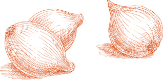
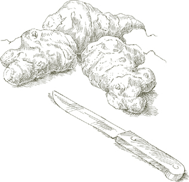
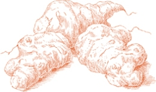
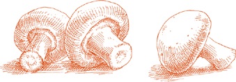
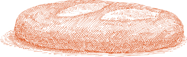
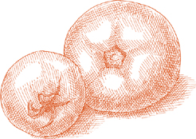

На 4-6 порций
2 больших артишока-шаровидки ИЛИ 3-4 среднего размера
½ лимона
2 столовые ложки нарезанного лука
3 столовые ложки оливкового масла первого отжима
½ чайной ложки чеснока, нарезанного очень мелко
2 фунта свежего неочищенного горошка ИЛИ 1 упаковка замороженного горошка весом десять унций, размороженного
1 столовая ложка измельченной петрушки
Соль
Черный перец, свежемолотый с мельницы
1. Обрежьте артишоки всех их сложных частей следуя подробным инструкциям на этой странице. Во время работы натирайте разрезанный артишок лимоном, чтобы он не почернел.
2. Разрежьте каждый обрезанный артишок вдоль на 4 равные части. Удалите мягкие, вьющиеся листья с колючими кончиками у основания и срежьте нечеткую «дроссель» под ними.
Отделите стебли, но не выбрасывайте их, потому что их можно есть так же вкусно, как и сердце, если их правильно обрезать. Очистите их темно-зеленую кожуру, чтобы обнажить бледную и нежную сердцевину, затем разделите их пополам вдоль или, если они очень толстые, на 4 части.
Разрежьте ломтики артишока вдоль на дольки толщиной около 1 дюйма в самом широком месте и выжмите лимонный сок на все разрезанные части, чтобы защитить их от обесцвечивания.
3. Выберите чугунную кастрюлю с толстым дном или эмалированную, достаточно большую, чтобы вместить все ингредиенты, положите нарезанный лук и оливковое масло, включите средний огонь, готовьте и помешивайте лук, пока он не станет очень бледно-золотистого цвета, затем добавьте чеснок. Готовьте чеснок до тех пор, пока он не станет светло-золотистого цвета, затем положите дольки артишока, залейте ⅓ стакана воды, отрегулируйте огонь до устойчивого кипения и плотно закройте кастрюлю.
4. Если вы используете свежий горошек: Очистите их от скорлупы и подготовьте некоторые стручки для приготовления. сдирая внутреннюю мембрану. Необязательно использовать все или даже большую часть модулей, но делайте столько, сколько у вас хватит терпения. (Стручки вносят заметный вклад в сладость гороха и всего блюда, но их использование — необязательная процедура, которую вы можете пропустить, если хотите.)
5. Когда артишоки будут готовиться около 10 минут, добавьте очищенный горох и дополнительные стручки, нарезанную петрушку, соль, перец и, если жидкости в кастрюле стало недостаточно, ¼ стакана воды. Тщательно переверните горох, чтобы он хорошо покрылся. Снова плотно накройте крышкой и продолжайте готовить, пока артишоки не станут очень мягкими в самом толстом месте, если их протыкать вилкой. Попробуйте и поправьте на соль. Также попробуйте горох, чтобы убедиться, что он полностью готов. Пока артишоки и горошек готовятся, добавьте 2–3 столовые ложки воды, если обнаружите, что жидкости недостаточно.
Если вы используете замороженный горошек: Добавьте размороженный горошек на последнем этапе, когда артишоки уже станут мягкими или почти мягкими, тщательно переверните их и дайте им готовиться вместе с артишоками в течение 5 минут.
6. Когда оба овоща будут полностью готовы, если вы обнаружите, что сок в кастрюле водянистый, снимите крышку, увеличьте огонь до сильного и быстро выкипятите.
Предварительное примечание  Блюдо можно приготовить в любое время заранее, в день подачи. Не храните в холодильнике, иначе его вкус изменится. Аккуратно разогрейте в закрытой кастрюле, при необходимости добавьте 1 столовую ложку воды.
Блюдо можно приготовить в любое время заранее, в день подачи. Не храните в холодильнике, иначе его вкус изменится. Аккуратно разогрейте в закрытой кастрюле, при необходимости добавьте 1 столовую ложку воды.
На 6 порций
3 больших артишока-шаровидки ИЛИ 5 или 6 среднего размера
½ лимона
4 больших лука-порея толщиной около 1¾ дюйма, ИЛИ 6 поменьше
¼ стакана оливкового масла первого отжима
Соль
Черный перец, свежемолотый с мельницы
1. Нарезаем очищенные артишоки на 1-дюймовые клинья, очистите и разделите стебли. Во время работы натирайте нарезанные артишоки лимоном, чтобы они не почернели.
2. Обрежьте корни лука-порея, все поврежденные листья и зеленую верхушку примерно на 1 дюйм. Разрежьте лук-порей вдоль пополам, затем нарежьте его на кусочки длиной около 2–3 дюймов.
3. Выберите чугунную кастрюлю с толстым дном или эмалированную, достаточно большую, чтобы вместить все ингредиенты, поместите лук-порей, оливковое масло и столько воды, чтобы она доходила до стенок кастрюли на 1 дюйм. Включите средний огонь, плотно накройте крышкой и варите при постоянном кипении, пока лук-порей не станет мягким.
4. Добавьте дольки артишока, соль, перец и, при необходимости, 2–3 столовые ложки воды. Снова накройте крышкой и готовьте, пока артишоки не станут очень мягкими в самом толстом месте, если их протыкать вилкой, около 30 минут или больше, в зависимости от артишоков. Пока артишоки готовятся, добавьте 2–3 столовые ложки воды, если обнаружите, что жидкости недостаточно. Когда они будут готовы, попробуйте их и поправьте на соль. Если после приготовления артишоков вы обнаружите, что сок в кастрюле водянистый, снимите крышку, увеличьте огонь до сильного и быстро выкипятите.
Предварительное примечание The примечание в конце Здесь подойдут тушеные артишоки и горох.
На 4-6 порций
2 больших артишока-шаровидки
½ лимона
1 фунт картофеля
⅓ стакана крупно нарезанного лука
¼ стакана оливкового масла первого отжима
¼ чайной ложки чеснока, нарезанного очень мелко
Соль
Черный перец, свежемолотый с мельницы
1 столовая ложка измельченной петрушки
1. Нарезаем очищенные артишоки на 1-дюймовые клинья, очистите и разделите стебли. Во время работы натирайте нарезанные артишоки лимоном, чтобы они не почернели.
2. Очистите картофель, промойте его в холодной воде и нарежьте небольшими дольками толщиной около ¾ дюйма в самом широком месте.
3. Выберите чугунную кастрюлю с толстым дном или эмалированную, достаточно большую, чтобы вместить все ингредиенты, положите нарезанный лук и оливковое масло и включите средний огонь. Обжарьте и помешивайте лук, пока он не станет станет полупрозрачным, но не окрашенным, затем добавьте чеснок. Готовьте чеснок до тех пор, пока он не станет светло-золотистого цвета, затем добавьте картофель, дольки и стебли артишоков, соль, перец и петрушку и готовьте достаточно долго, чтобы перевернуть все ингредиенты 2 или 3 раза.
4. Добавьте ¼ стакана воды, отрегулируйте огонь до равномерного, но осторожного кипения и плотно накройте крышкой. Готовьте до тех пор, пока картофель и артишоки не станут мягкими, если их проткнуть вилкой, примерно 40 минут, в зависимости от картофеля. Во время приготовления добавьте 2–3 столовые ложки воды, если обнаружите, что в кастрюле недостаточно жидкости. Перед подачей попробуйте и поправьте на соль.
Предварительное примечание The примечание в конце «Тушеные артишоки и горох» здесь применимы.

FИЛИ ВСЕГО ШЕСТЬ НЕДЕЛЬ Весной, с апреля по май, сицилийские повара находят овощи достаточно молодыми, чтобы их можно было приготовить. фриттедда. Молодость и свежесть – идеальные компоненты этого райского блюда, свежесть только что сорванных молодых артишоков, фасоли и гороха. Я видел фриттедда приготовленный в Палермо, когда овощи были настолько нежными, что готовились едва ли дольше, чем требовалось, чтобы перемешать их в кастрюле.
Если вы выращиваете его самостоятельно или имеете доступ к хорошему фермерскому рынку, вы можете очень близко повторить нежный сицилийский вкус этого блюда. Но даже если вам приходится полагаться на продукты среднего зеленщика, либо ограничьтесь временем года, когда необходимые здесь овощи есть в наличии. младшим, или принять компромиссы, предложенные ниже, и достаточно фриттедда магия проявится и оправдает ваше время.
Аромат свежего дикого фенхеля является важной частью этого блюда, как и многих других сицилийских блюд. Если трава вам недоступна, используйте свежий укроп или попросите зеленщика оставить для вас верхушки листьев, которые он обычно срезает. прочь, Финоккио.
На 6 порций
3 средних ИЛИ 5 небольших артишоков, очень свежих, без черных пятен и других изменений цвета.
½ лимона
2 фунта свежих маленьких фасолей в стручках ИЛИ ⅔ банки емкостью 15 унций «зеленой» любимый, осушенный
1 фунт свежего мелкого горошка в стручках ИЛИ ½ упаковки по 10 унций, замороженного мелкого горошка, размороженного.
1 чашка свежего дикого фенхеля ИЛИ 1½ стакана листовой Финоккио топы ИЛИ ⅔ чашки свежего укропа
1½ стакана сладкого сырого лука, нарезанного очень тонкими ломтиками (см. примечание ниже)
⅓ стакана оливкового масла первого холодного отжима Соль
Примечание Используйте самый сладкий сорт лука: Видалия, Мауи или Бермудские острова. Если у вас нет ничего из этого, замочите нарезанный желтый лук в нескольких сменах холодной воды на 30 минут, осторожно сжимая лук в руке каждый раз, когда меняете воду; перед использованием слейте воду.
1. Нарезаем очищенные артишоки на клинья толщиной ½ дюйма и обрежьте, но не разделяйте их стебли. Во время работы натирайте нарезанные артишоки лимоном, чтобы они не почернели.
2. Если вы используете свежие бобы, очистите их от шелухи и выбросьте стручки.
3. Если вы используете свежий горошек, очистите его от шелухи и подготовьте несколько стручков для приготовления. раздевание их внутренняя мембрана. Не обязательно использовать все или даже большую часть стручков, но чем больше вы это сделаете, тем слаще будет результат. фриттедда будет вкус.
4. Вымойте дикий фенхель, Финоккио ботву или укроп замочить в холодной воде, затем нарезать крупными кусочками.
5. Выберите чугунную кастрюлю с толстым дном или эмалированную, достаточно большую, чтобы вместить все ингредиенты, положите нарезанный лук и оливковое масло, включите средний огонь и готовьте, пока лук не станет мягким и прозрачным.
6. Положите дикий фенхель, Финоккио верхушки или укропа, дольки артишока и стебли тщательно перемешайте, чтобы они хорошо покрылись, и плотно накройте кастрюлю. Через 5 минут, проверьте артишоки. Если они в расцвете сил, они должны выглядеть влажными и блестящими, а масла и паров лука и фенхеля должно быть достаточно для продолжения приготовления. Но если они кажутся суховатыми, добавьте 3 столовые ложки воды. Если у вас есть сомнения, все равно добавьте его, это не нанесет слишком большого ущерба. Если вы не проверяете горшок, держите его плотно закрытым.
7. Если вы используете свежую фасоль и горох: Добавьте их, когда артишоки будут наполовину готовы, примерно через 15 минут, если они очень молодые и свежие. Добавьте 2–3 столовые ложки воды, если вы сомневаетесь, что в кастрюле достаточно влаги для их приготовления. Переверните все ингредиенты, чтобы они хорошо покрылись.
Если вы используете свежую фасоль и замороженный горошек: Сначала положите фасоль, готовьте 10 минут, если она очень маленькая, и 15–20 минут, если она крупнее, затем добавьте размороженный горошек и готовьте еще 5 минут, пока артишоки и фава не станут мягкими.
Если вы используете свежий горошек и консервированную фасоль: Когда артишоки будут наполовину готовы, положите горох и обрезанные стручки. Готовьте, пока горох и артишоки не станут мягкими, при необходимости добавляя 2–3 столовые ложки воды, затем положите в осушенные консервированные «зеленые» любимый» и готовьте еще 5 минут.
Если вы используете замороженный горошек и консервированную фасоль: Положите одновременно размороженный горошек и осушенную фасоль, когда артишоки только начнут становиться мягкими, если их протыкать вилкой. Готовьте еще 5 минут.
8. Перед подачей попробуйте и поправьте на соль. Позволять фриттедда дайте настояться в течение нескольких минут, давая аромату проявиться на огне, прежде чем подавать его на стол, но не подавайте его холодным. Если возможно, подавайте его сразу после приготовления, не разогревая.
HЭРЕ ЕСТЬ тот случай, когда не нужно слишком настойчиво относиться к использованию замороженных овощей. Замороженные сердечки артишоков очень хорошо жарятся, и контраст между их мягкой внутренней частью и хрустящей корочкой из яиц и панировочных сухарей весьма привлекателен. Это не значит, что следует отказываться от свежих артишоков, если они очень молодые и нежные.
На 4-6 порций
3 средних артишока ИЛИ 1 упаковка на десять унций замороженных сердечек артишока, размороженных
Если вы используете свежие артишоки: ½ лимона и 1 столовая ложка свежевыжатого лимонного сока.
1 яйцо
1 чашка мелких, сухих, неароматизированных панировочных сухарей, разложенных на тарелке
Растительное масло
Соль
1. Если вы используете свежие артишоки: Нарезаем очищенные артишоки на клинья толщиной 1 дюйм, обрежьте и разделите их стебли. Во время работы натирайте нарезанные артишоки лимоном, чтобы они не почернели.
Доведите до кипения 3 литра воды. Положите 1 столовую ложку лимонного сока вместе с артишоками и варите не менее 5 минут после того, как вода снова закипит, пока артишоки не станут мягкими, но все еще достаточно твердыми, чтобы оказывать некоторое сопротивление, если проткнуть их вилкой в самом толстом месте. Слейте воду, дайте остыть и обсушите.
Если вы используете замороженные артишоки: Когда они разморозятся, если они целые, разрежьте их пополам и тщательно промокните бумажными полотенцами.
2. Слегка взбейте яйцо в небольшой миске или глубоком блюдце.
3. Окуните артишоки в яйцо, дайте излишкам стечь обратно в миску, затем обваляйте их в панировочных сухарях, чтобы они были полностью покрыты.
4. Налейте в сковороду достаточно масла, чтобы оно поднялось на ¾ дюйма по бокам, и включите средний огонь. Когда масло станет достаточно горячим, чтобы образовалась легкая дымка, положите в сковороду панированные артишоки, готовьте их достаточно долго, чтобы на одной стороне образовалась корочка, затем переверните их и обработайте другую сторону. Если они не помещаются все одновременно на сковороду свободно, не скучиваясь, жарьте их двумя или более партиями. Когда каждая партия будет готова, переложите ее шумовкой или лопаткой на решетку для охлаждения, чтобы она стекала, или на тарелку, застеленную бумажными полотенцами. Когда все будет готово, посыпьте солью и сразу подавайте.
Предварительное примечание Рецепт можно завершить за несколько часов до этого момента, но если вы храните измельченные овощи в холодильнике, достаньте их за достаточное время, чтобы они полностью достигли комнатной температуры.
На 4 порции
4 больших ИЛИ 6 средних артишоков
½ лимона
1 столовая ложка свежевыжатого лимонного сока
Форма для запекания в духовке на столе
Сливочное масло для смазывания формы и расстановки точек.
Соль
½ стакана свеженатёртого пармиджано-реджано сыр
1. Нарезаем очищенные артишоки на клинья толщиной 1 дюйм, обрежьте и разделите их стебли. Во время работы натирайте нарезанные артишоки лимоном, чтобы они не почернели.
2. Разогрейте духовку до 375°.
3. Доведите до кипения 3 литра воды. Добавьте 1 столовую ложку лимонного сока вместе с артишоками и варите 5 или более минут после того, как вода снова закипит, пока артишоки не станут мягкими, но все еще достаточно твердыми, чтобы оказывать некоторое сопротивление при протыкании вилкой в самом толстом месте. Слейте воду и дайте остыть.
4. Нарежьте дольки артишока очень тонкими продольными ломтиками.
5. Смажьте дно формы для запекания сливочным маслом и выложите слоем ломтиков и стеблей артишоков. Посыпьте солью и тертым пармезаном, полейте сливочным маслом. Повторите процедуру, выкладывая артишоки слоями, пока все не будут использованы. Обильно посыпьте верхний слой тертым сыром и смажьте сливочным маслом.
6. Выпекать в верхней трети разогретой духовки 15 или 20 минут, пока сверху не образуется легкая корочка. Перед подачей дайте настояться несколько минут.
IЭТОТ ЗАПЕКАНКА, артишоки полностью готовятся перед отправкой в духовку с сырым нарезанным картофелем и жареным луком. Пока картофель готовится, тонкие ломтики артишока становятся очень мягкими, теряя часть своей текстуры, чтобы более свободно распространять свой вкус.
На 6 порций
2 больших артишока-шаровидки ИЛИ 4 среднего размера
1 лимон, разрезанный пополам
2 столовые ложки сливочного масла плюс еще для смазывания формы для выпечки
1 чашка лука, нарезанного тонкими ломтиками
Соль
3 средних картофелины, очищенных и нарезанных тонкими ломтиками
Форма для запекания в духовке на столе
Черный перец, свежемолотый с мельницы
½ стакана свеженатёртого пармиджано-реджано сыр
1. Нарезаем очищенные артишоки на 1-дюймовые клинья, очистите и разделите стебли. Используйте половину лимона, чтобы смачивать соком разрезанные части во время работы. Положите дольки и стебли артишока в миску с достаточным количеством холодной воды, чтобы она покрыла их, и выжмите в миску сок другой половинки лимона. Перемешайте и дайте постоять до тех пор, пока это не понадобится в дальнейшем.
2. Выберите сотейник, достаточно большой, чтобы вместить все ингредиенты, положите 2 столовые ложки сливочного масла и лук и включите средний огонь. Готовьте лук на медленном огне, время от времени помешивая, пока он не станет очень мягким и не приобретет темно-золотой цвет. Снимите жару.
3. Слейте воду с дольок и стеблей артишоков и промойте их холодной водой, чтобы смыть следы их подкисленной замачивания. Нарезаем дольки максимально тонкими ломтиками. Положите ломтики и стебли в кастрюлю с луком, посыпьте солью, добавьте ½ стакана воды, включите средний огонь и накройте кастрюлю слегка приоткрытой крышкой. Готовьте на медленном прерывистом огне, время от времени переворачивая артишоки, пока они не станут мягкими при протыкании вилкой, около 15 минут или больше, в зависимости от их молодости и свежести.
4. Пока артишоки готовятся, разогрейте духовку до 400°.
5. Когда артишоки будут готовы, положите нарезанный картофель в кастрюлю, переверните его 2–3 раза, чтобы он хорошо покрылся, затем снимите с огня.
6. Вылейте содержимое формы в форму для запекания, желательно выбрать такую, в которой все ингредиенты не будут подниматься по краям более чем на 1½ дюйма. Добавьте несколько молотых перцев и еще немного соли и с помощью тыльной стороны ложки или лопаточки равномерно распределите смесь артишоков и картофеля. Смажьте верх сливочным маслом и поставьте форму на верхнюю полку разогретой духовки.
7. Через 15 минут достаньте форму из духовки, переверните ее содержимое 2–3 раза, снова равномерно разложите и верните в духовку. Когда картофель станет мягким, примерно через 15 минут, достаньте форму, посыпьте сверху тертым пармезаном и держите в духовке, пока сыр не расплавится и не образуется легкая корочка. Перед подачей дайте огню утихнуть в течение нескольких минут.
TОН КОНДИТЕРСКАЯ РАКОВИНА необычен этот овощной пирог тем, что вместо яиц, которые обычно идут на приготовление итальянского слоеного теста, в нем используется рикотта. Он очень легкий, и слово, которое лучше всего описывает его текстуру, действительно «шелушащийся».
Ароматная начинка состоит в основном из артишоков, нарезанных очень тонкими ломтиками и тушеных на подушке из моркови и лука. Он закруглен яйцами, рикоттаи Пармезан.
На 6 порций
ДЛЯ НАПОЛНЕНИЯ
4 средних артишока
1 лимон, разрезанный пополам
3 столовые ложки оливкового масла первого отжима
2 столовые ложки нарезанного лука
3 столовые ложки нарезанной моркови
1 столовая ложка измельченной петрушки
Соль
Черный перец, свежемолотый с мельницы
¾ стакана свежего рикотта
½ стакана свеженатёртого пармиджано-реджано сыр
2 яйца
1. Обрежьте артишоки всех их сложных частей. Во время работы натирайте разрезанный артишок половинкой лимона, выдавливая на него капли сока, чтобы он не почернел. Разрежьте обрезанные артишоки пополам, чтобы обнажить сердцевину и колючие внутренние листья, и выбросьте их, затем разрежьте их вдоль на максимально тонкие ломтики. Положите в миску с достаточным количеством воды, чтобы покрыть ее, и соком второй половинки лимона.
2. Очистите стебли артишоков их твердой внешней кожуры и нарежьте их вдоль на очень тонкие ломтики. Добавьте их в миску с нарезанными артишоками.
3. Положите масло, лук и морковь в сотейник и включите средний огонь. Готовьте и помешивайте лук, пока он не станет бледно-золотистого цвета. Затем добавьте петрушку, быстро помешивая 2–3 раза.
4. Слейте воду с артишоков, хорошо промойте их под холодной водой, чтобы смыть лимон, промокните их полотенцем и добавьте в кастрюлю. Переверните их 2–3 раза, чтобы они хорошо покрылись, добавьте соль и перец, переверните еще 2–3 раза, затем добавьте ½ стакана воды и накройте кастрюлю крышкой. Варить до готовности, от 5 до 15 минут, в зависимости от молодости и свежести артишоков. Если тем временем жидкости в кастрюле станет недостаточно, при необходимости добавьте 2 или 3 столовые ложки воды. Однако, когда артишоки будут готовы, в кастрюле не должно быть воды. Если да, снимите крышку, увеличьте огонь до сильного и быстро выкипятите. Вылейте все содержимое кастрюли в миску и дайте полностью остыть.
5. Когда остынет, добавьте рикотта и тертый пармезан.
6. Слегка взбейте яйца в глубокой тарелке, затем перемешайте их в миске. Попробуйте и исправьте начинку на соль и перец.
ПРИГОТОВЛЕНИЕ КОРОЧКИ И ЗАВЕРШЕНИЕ ТОРТА
1½ стакана муки
8 столовых ложек (1 палочка) сливочного масла, размягченного до комнатной температуры
¾ стакана свежего рикотта
½ чайной ложки соли
Вощеная бумага ИЛИ кухонный пергамент
8-дюймовая разъемная форма.
Масло и мука для формы
1. Разогрейте духовку до 375°.
2. Смешать муку, масло, рикоттаи посолите в миске пальцами или вилкой.
3. Выложите смесь на рабочую поверхность и месите 5–6 минут, пока тесто не станет гладким. Разделите тесто на 2 неравные части, одна в два раза больше другой.
4. Раскатайте больший кусок теста в круглый лист не толще. чем ⅓ дюйма. Чтобы упростить переноску теста в форму, раскатайте тесто на слегка посыпанной мукой вощеной бумаге или кухонном пергаменте.
5. Смажьте внутреннюю часть разъемной формы сливочным маслом, затем посыпьте ее мукой и переверните, резко постучав по столу, чтобы стряхнуть с нее рассыпчатую муку.
6. Возьмите вощеную бумагу или кухонный пергамент с листом теста и переверните его на форму, накрыв дно и позволив ему подняться по бокам. Снимите вощеную бумагу или пергамент и разгладьте тесто, разглаживая и выравнивая пальцами особенно громоздкие складки.
7. Вылейте на сковороду начинку из артишоков и разровняйте лопаткой.
8. Раскатайте оставшийся кусок теста тем же способом, что и ранее. Выложите его поверх начинки, полностью закрыв ее. Прижмите край верхнего листа теста к краю формы. Плотно закройте все вокруг, складывая лишнее тесто к центру.
9. Поставьте на самую верхнюю решетку разогретой духовки и запекайте, пока верх не подрумянится, около 45 минут. Вынимая его из духовки, разблокируйте пружину формы и снимите пяльцы. Разрешить торта дать отстояться несколько минут, прежде чем снять его со дна и переложить на сервировочное блюдо. Подавайте теплым или комнатной температуры.

Безвестность часто является уделом продуктов, которые начинают свою жизнь под запутанным названием. Этот прекрасный, но несправедливо забытый овощ родом не из Иерусалима, он родом из Северной Америки; это не артишок, это съедобный корень разновидности подсолнечника. Подсолнух по-итальянски гиразоль, что для неитальянских ушей, очевидно, звучало как Иерусалим. Еще более странно, что его итальянское название не имеет отдаленного отношения к гиразоль или подсолнечник. Это топинамбур, название бразильской труппы, которая гастролировала по стране, очевидно, в то же время, когда был введен корень. Возможно, в конечном итоге он станет более известен среди англоговорящих людей как «sunchoke» — название, которое его производители решили придумать для него, и которое отныне будет использоваться здесь.
Как использовать Нарезанные очень тонкими ломтиками, сырые солнечные ломтики получаются одновременно хрустящими и сочными, с ореховым вкусом, который очень приветствуется в салате. При обжаривании или запекании их текстура представляет собой смесь сливок и шелка. и их вкус отдаленно напоминает вкус сердцевины артишока, но он слаще, без какой-либо основной горечи артишока. Тонкую кожуру можно оставить, когда ее едят сырой, но перед приготовлением ее необходимо снимать, поскольку она затвердевает.
Как купить Сезон солнечных чоков длится с осени до начала весны. Они лучше всего проявляют себя, когда очень тверды; теряя свежесть, они становятся губчатыми.
На 6 порций
1½ фунта солнечных орехов Соль
¼ стакана оливкового масла первого отжима
1 чайная ложка чеснока, нарезанного очень мелко
Черный перец, свежемолотый с мельницы
1 столовая ложка петрушки, нарезанной очень мелко
1. Очистите солнечные орехи с помощью небольшого ножа для очистки овощей или овощечистки с поворотным лезвием. Доведите до кипения 3 литра воды, добавьте соль, затем бросьте очищенные солнечные орехи, сначала более крупные куски, а меньшие придержите на несколько мгновений. Когда вода снова закипит, достаньте солнечные дроссели. Как только они остынут, нарежьте их ломтиками толщиной ¼ дюйма или меньше. Они все еще должны быть достаточно твердыми.
2. Положите оливковое масло и чеснок в сковороду и включите средний огонь. Готовьте, помешивая чеснок, пока он не приобретет бледно-золотистый цвет, затем добавьте нарезанные ломтики солнца, тщательно переворачивая, чтобы они хорошо покрылись. Добавьте соль, перец и нарезанную петрушку и еще раз полностью переверните. Готовьте до тех пор, пока оладьи не станут очень мягкими, если их протыкать вилкой, время от времени переворачивая их во время приготовления. Попробуйте и поправьте на соль и сразу подавайте.
На 4 порции
1 фунт солнечных удушаний
Соль
Форма для запекания в духовке на столе
Сливочное масло для смазывания и усеивания формы для запекания
Черный перец, свежемолотый с мельницы
¼ стакана свеженатертого пармиджано-реджано сыр
1. Разогрейте духовку до 400°.
2. Очистите солнечные орехи и бросьте их в подсоленную кипящую воду. Готовьте их до тех пор, пока они не станут мягкими, но не мягкими, если их протыкать вилкой. Через десять минут после того, как вода снова закипит, проверяйте их почаще, потому что за короткий промежуток времени они имеют тенденцию превращаться из очень твердых в очень мягкие. Когда все будет готово, слейте воду, и как только они достаточно остынут, нарежьте их ломтиками толщиной ½ дюйма.
3. Смажьте дно формы для запекания сливочным маслом, затем положите туда ломтики солнечного ореха, расположив их так, чтобы они слегка перекрывали друг друга, как черепица. Посыпьте солью, перцем и тертым пармезаном, смажьте сливочным маслом и поставьте форму на самую верхнюю решетку разогретой духовки. Выпекать до тех пор, пока сверху не начнет образовываться легкая золотистая корочка. Перед подачей дайте настояться несколько минут из духовки.

На 6 порций
1½ фунта солнечных удушаний
¼ стакана оливкового масла первого отжима
1 чашка лука, нарезанного очень мелко
½ чайной ложки измельченного чеснока
2 столовые ложки измельченной петрушки
⅔ стакана консервированных импортных итальянских помидоров сливы, нарезанных, с соком
Соль
Черный перец, свежемолотый с мельницы
1. С помощью ножа для очистки овощей или овощечистки с поворотным лезвием очистите солнечные чокеры, вымойте их в холодной воде и нарежьте на кусочки толщиной около 1 дюйма.
2. Положите масло и лук в сотейник и включите средний огонь. Готовьте и помешивайте лук, пока он не станет темно-золотистого цвета, затем положите в чесноке. Быстро перемешайте, добавьте петрушку, быстро перемешайте 2–3 раза, затем добавьте помидоры с соком. Перемешайте, чтобы оно хорошо покрылось, и отрегулируйте огонь, чтобы варить при постоянном кипении.
3. Когда помидоры прокипят на медленном огне в течение 5 минут, добавьте нарезанные солнечные чили, соль и перец, полностью переверните их один или два раза, чтобы они хорошо покрылись, и отрегулируйте огонь так, чтобы варить на очень медленном прерывистом огне. Готовьте примерно 30–45 минут, время от времени помешивая, пока оладьи не станут очень мягкими, если их протыкать вилкой.
Предварительное примечание Блюдо можно приготовить до конца за несколько часов или даже за день. Не разогревайте повторно более одного раза.
На 6 порций
1 фунт солнечных удушаний
8 пучков зеленого лука
3 столовые ложки сливочного масла
Соль
Черный перец, свежемолотый с мельницы
1. С помощью ножа для очистки овощей или овощечистки с поворотным лезвием очистите солнечные чокеры, вымойте их в холодной воде и тщательно промокните бумажными полотенцами. Нарежьте их очень тонкими ломтиками, желательно толщиной не более ¼ дюйма.
2. Обрежьте корни зеленого лука и поврежденные листья, но не удаляйте зеленые верхушки. Вымойте в холодной воде, обсушите и сделайте из каждого зеленого лука по 2 коротких кусочка, разрезав его пополам. Если у некоторых луковицы толстые, разделите их вдоль пополам.
3. Положите сливочное масло в сотейник и включите средний огонь. Когда масло растает и начнет пениться, положите зеленый лук, переверните, чтобы он хорошо покрылся, убавьте огонь до среднего и добавьте ½ стакана воды. Готовьте, пока вся вода не выпарится, время от времени переворачивая зеленый лук.
4. Добавьте ломтики солнечного ореха, соль и перец и тщательно переверните, чтобы они хорошо покрылись. Добавьте еще ½ стакана воды и варите при постоянном, но осторожном кипении, пока вода полностью не испарится, время от времени переворачивая зеленый лук и солнечные орехи. Во время приготовления проверяйте сырники вилкой. Если они очень свежие, они могут стать мягкими до того, как испарится вся вода. Если это произойдет, увеличьте огонь до сильного и быстро выкипятите жидкость. Если же вода испарилась и они еще не стали полностью мягкими, добавьте 2–3 столовые ложки воды и продолжайте готовить. В большинстве В этом случае солнечные удушья будут выполнены в течение 20 или 25 минут. Попробуйте и поправьте на соль и сразу подавайте.

На 4 порции
1 фунт солнечных удушаний
Растительное масло
Соль
1. С помощью ножа для очистки овощей или овощечистки с поворотным лезвием очистите солнечные орехи и нарежьте их как можно более тонкими ломтиками. Промойте их в нескольких сменах холодной воды, чтобы смыть следы почвы и крахмала. Тщательно промокните бумажными полотенцами.
2. Налейте в сковороду достаточно масла, чтобы оно поднялось по бокам чуть более чем на ¼ дюйма, и включите сильный огонь. Когда масло нагреется, положите в него столько ломтиков солнечного перца, сколько поместится свободно, не перегружая сковороду. Когда они станут красивого красновато-коричневого цвета с одной стороны, переверните их и обработайте другую сторону. Переложите их шумовкой или лопаткой на решетку для охлаждения, чтобы дать стечь воде, или на блюдо, застеленное бумажными полотенцами. Положите следующую порцию и повторяйте процедуру, пока все солнечные штучки не будут готовы. Посыпьте солью и сразу подавайте.
Как купить Первое, на что следует обратить внимание, — это кончик копья или бутона. Он должен быть плотно закрытым и прямым, а не открытым и обвисшим. Оттенок зеленая спаржа должна быть свежей, яркой, без намека на желтый цвет. Белая спаржа должна быть прозрачного, ровного кремового цвета. Стебель должен быть твердым, а общий вид должен быть влажным. Хотя спаржа, как и почти все остальное, сейчас продается большую часть года, самая свежая она бывает весной, с апреля до начала июня. Толстый стебель спаржи не обязательно лучше, чем тощий, но он обычно дороже. Если вы собираетесь нарезать спаржу для соуса для пасты или ризоттоили фриттата, вам определенно не нужно переплачивать за размер. Однако если вы подаете спаржу целиком, более мясистый стебель иногда может оказаться более сытным.
Как сохранить В идеале спаржа должна быть доставлена с рынка в кастрюлю, но могут пройти часы или даже дни, в течение которых вам захочется сохранить ее как можно более свежей. Свяжите спаржу, если она рыхлая, и поставьте ее торцами в емкость с 1–2 дюймами холодной воды. Таким образом, вы можете хранить его в прохладном месте без холодильника в течение дня или полутора дней.
Как подготовиться к приготовлению Вся спаржа, за исключением небольшой древесной части в нижней части стебля, может быть съедобной, если правильно приготовить спаржу. Начните с отрезания примерно 1 дюйм от толстого торца. Если вы обнаружите, что конец стебля, который вы обнажили, пересох и волокнистый, отрежьте еще немного, пока не дойдете до более влажной части. Чем моложе спаржа, тем меньше ее нужно будет обрезать снизу.
Несмотря на то, что центр стебля сочный и нежный, окружающие его темно-зеленые волокна не таковы, и их необходимо срезать. Держите спаржу кончиком к себе и с помощью небольшого острого ножа снимите твердый, тонкий внешний слой стебля, начиная с основания, на глубину около 1/16примерно на дюйм и постепенно сужается до нуля по мере того, как вы подносите лезвие к более узкой части стебля у основания бутона. Слегка поверните стебель и повторяйте процедуру, пока не обрежете его со всех сторон. Затем удалите все маленькие листья, прорастающие под кончиком копья.
Замочите копья на 10 минут в тазу, наполненном холодной водой, затем промойте в 2–3 сменах воды.
Как готовить Выберите любую кастрюлю, в которой позже можно будет хранить обрезанные копья, лежащие ровно. Залейте водой и доведите до кипения. Добавьте 1 столовую ложку соли на каждый фунт спаржи и, когда вода снова начнет быстро закипать, положите спаржу. Накройте кастрюлю, чтобы вода быстрее закипела. Когда это произойдет, вы сможете открыть кастрюлю. Через 10 минут вы можете начать проверять спаржу, проткнув вилкой самую толстую часть стебля. Это делается, когда его легко проколоть. (Если он очень тонкий и исключительно свежий, это может занять минуту или две меньше.) Сразу же слейте воду после приготовления.

На 4 порции
2 фунта свежей спаржи
Соль
Форма для запекания в духовке на столе
Сливочное масло для смазывания и нанесения точек на блюдо.
⅔ стакана свеженатертой пармиджано-реджано сыр
1. Разогрейте духовку до 450°.
2. Очистите и отварите спаржу.
3. Смажьте дно прямоугольной или овальной формы для запекания сливочным маслом. Поместите осушенную вареную спаржу в блюдо, уложив ее рядом, частично перекрывающимися рядами, так, чтобы все почки были направлены в одном направлении. Кончики побегов верхнего ряда должны перекрывать торцы стеблей нижнего ряда. Посыпьте каждый ряд солью и тертым сыром, смажьте сливочным маслом, прежде чем положить поверх него еще один ряд.
4. Выпекайте на самой верхней полке разогретой духовки до образования легкой золотистой корочки сверху. Проверьте через 15 минут выпекания. Достав из духовки, дайте настояться несколько минут перед подачей.
На 4 порции
К ингредиентам предыдущего рецепта добавьте:
2 столовые ложки сливочного масла
4 яйца
Соль
Черный перец, свежемолотый с мельницы
1. Приготовьте запеченную спаржу с пармезаном, как указано в рецепте выше.
2. Достаньте форму для запекания из духовки и разделите спаржу на 4 части, выложив каждую на теплую тарелку.
3. Выложите сливочное масло в сковороду, включите средний огонь и, как пена масла начнет спадать, разбейте в сковороду яйца и посыпьте солью. Не кладите за один раз больше яиц, чем поместится без перекрытия. Если сковорода не может вместить их все одновременно, жарьте их двумя или более партиями.
4. Поместите жареное яйцо на каждую порцию спаржи, затем полейте каждое яйцо соком из формы для запекания. Посыпьте перцем и сразу подавайте.
На 6 порций
18 отборных толстых побегов свежей спаржи
½ фунта итальянского фонтина сыр, нарезанный тонкими ломтиками (см. примечание ниже)
6 больших тонких ломтиков прошутто
2 столовые ложки сливочного масла плюс еще для смазывания формы для выпечки
Форма для запекания в духовке на столе
Примечание Если вы не можете найти настоящий импортный итальянский фонтина, а не подменять банальную имитацию фонтина из других источников используйте пармиджано-реджано сыр, нарезанный тонкими длинными пластинками. Если вы это сделаете, замените прошутто вареной некопченой ветчиной, потому что и пармезан, и прошутто соленые, и их сочетание может сделать пучки спаржи слишком солеными.
1. Очистите и отварите спаржу, готовя его скорее на твердой, чем на мягкой стороне.
2. Разогрейте духовку до 400°.
3. Отложите 12 ломтиков фонтина (или 12 длинных ломтиков пармезана), а остальной сыр разделите на 6 более или менее равных холмиков.
4. Разложите ломтик прошутто (или вареной ветчины) и положите на него 3 спаржи. Между копьями поместите весь сыр из одного из 6 равных холмиков. Добавьте 1 чайную ложку сливочного масла, затем плотно оберните прошутто вокруг стеблей спаржи. Продолжайте, пока не получите 6 гроздей спаржи и сыра, завернутых в прошутто или ветчину.

5. Выберите форму для запекания, в которой будут находиться все жгуты без перекрытия. Слегка смажьте дно формы сливочным маслом и выложите пучки спаржи. Поверх каждого положить по 2 перекрещенных ломтика фонтина или кусочки пармезана, взятые из отложенного ранее сыра. Слегка смажьте каждый пучок сливочным маслом и поставьте блюдо на самую верхнюю решетку разогретой духовки. Выпекайте около 20 минут, этого достаточно, чтобы сыр расплавился и образовалась слегка крапчатая корочка.
6. Достав из духовки, дайте настояться несколько минут перед подачей на стол. Подавая каждый сверток, полейте его соком из формы для запекания и положите хороший хрустящий хлеб, чтобы он пропитал его.

Пока первооткрыватели Америки не вернулись домой с бобами, а также с золотом и серебром, единственными бобами, известными Европе, была фава, или бобы. Любопытно, что, хотя его выращивают и употребляют в пищу уже около 5000 лет, его популярность в Италии никогда не выходила за рамки юга и центра. Тосканцы выращивают их акрами и едят бушелями, даже не готовя их, макая сырыми в крупную соль и гоняясь за ними. пекорино, сыр из овечьего молока. Но в северной Италии у большинства людей их никогда не было, и они понятия не имеют, что с ними делать.
Когда и как покупать Их сезон длится с апреля по июнь, но лучшие зерна — самые ранние и молодые. В очищенном виде они должны быть размером с лимскую фасоль или немного больше. Большие фавы более жесткие, сухие и крахмалистые. Ищите стручки, которые не слишком сильно выпирают из-за разросшихся бобов.
Как готовить Когда Готовя свежие бобы, лучший совет: делайте, как делают римляне. Классическое римское блюдо, которое весной можно попробовать в каждом траттория В городе мало аналогов среди великолепных блюд из фасоли. Я никогда не пережил ни одну весну без того, чтобы не приготовить его по крайней мере полдюжины раз, и ни одна еда, которую я могу поставить на стол, никогда не была принята более тепло. В Риме это блюдо известно как любимый аль Гуанчиале, потому что фасоль готовится со свиной щекой, гуанчиале. В версии, представленной здесь, панчетта— который гораздо легче найти — с полным успехом заменяет свиную челюсть.
На 4 порции
Панчетта одним ломтиком толщиной ½ дюйма
3 фунта неочищенных молодых свежих фасолей
2 столовые ложки оливкового масла первого отжима
2 столовые ложки мелко нарезанного лука
Черный перец, свежемолотый с мельницы
Соль
1. Разверните панчетта и нарезаем его полосками шириной ¼ дюйма.
2. Очистите фасоль, выбросив стручки. Промойте фаву в холодной воде.
3. Положите масло и лук в сотейник и включите средний огонь. Обжарьте и помешивайте лук, пока он не станет прозрачным, затем добавьте панчетта полоски. Готовьте примерно 2–3 минуты, затем добавьте фасоль и перец и перемешайте, чтобы они хорошо покрылись. Добавьте ⅓ стакана воды, отрегулируйте огонь до самого медленного кипения и накройте кастрюлю крышкой. Если фасоль очень молодая и свежая, она приготовится примерно за 8 минут, но если она еще не в расцвете сил, то это может занять 15 минут или даже больше. Время от времени проверяйте их вилкой. Если жидкости становится недостаточно для приготовления, пополните ее 3–4 столовыми ложками воды. Когда он станет мягким, добавьте соль, тщательно перемешайте и готовьте еще минуту или две. Если в кастрюле осталась вода, снимите крышку, увеличьте огонь до сильного и быстро выкипятите ее. Подавайте сразу с толстыми ломтиками хрустящего хлеба.

Весна и лето щедры на овощи, но нет ничего более ценного и более характерного для итальянского стола, чем молодая свежая зеленая фасоль. Когда в июньский день в Италии вы позволили себе погрузиться в ритм итальянской еды и съели пасту, а затем, возможно, скалоппин или курица, или рыба, а затем на стол приходит блюдо с еще теплой вареной зеленой фасолью, блестящей от оливкового масла и лимонного сока, и после кусочка этой фасоли вы вполне можете подумать, что нет ничего вкуснее.
Нет никакого волшебства в том, чтобы блюдо из простой вареной фасоли выглядело и имело прекрасный вкус. Конечно, качество оливкового масла чрезвычайно важно. Но на самом деле все начинается с бобов, с того, как их выбирают и как готовят.
Как купить Хотя теперь они доступны круглый год, те, что выращены на месте весной и летом, по-прежнему остаются лучшими. Их цвет должен быть однородным. зеленый, то светлый, то темный, но ровный, без пятен и желтизны. Кожа у них должна быть свежей, почти влажной, не тусклой. Причем фасоль должна быть не смешанная, а вся одного размера, желательно не слишком толстая. Если можете, возьмите фасоль из корзины и сломайте ее: она должна щелкнуть резко и четко.
Как готовить Фасоль необходимо готовить достаточно долго, чтобы она приобрела округлый, ореховый и сладкий вкус: ее не следует переваривать, но и не недоваривать. Когда они недоварены, у них вкус не бобов, а вкус сырой травы. При варке фасоли необходимо добавить соль в кипящую воду перед тем, как бросать фасоль, чтобы сохранить ее ярко-зеленый цвет. Этот принцип применим ко всем зеленым овощам, особенно к шпинату и мангольду. Овощ не становится соленым, поскольку практически вся соль остается растворенной в воде.
Отваривание 1 фунта зеленой фасоли
• Отломите оба конца фасоли, затем замочите фасоль в тазике с холодной водой на 10 минут.
• Доведите до кипения 4 литра воды. Добавьте 1 столовую ложку соли, которая на мгновение замедлит кипение. Как только вода снова закипит, бросьте в нее сушеную зеленую фасоль. Когда вода снова закипит, отрегулируйте огонь так, чтобы она кипела с умеренной скоростью. Время приготовления будет зависеть от молодости и свежести зерен. Если вы очень молоды и свежи, это может занять 6 или 7 минут; в противном случае это может занять 10 или 12 минут или даже больше. Начните пробовать фасоль после того, как она будет вариться в течение 6 минут. Слейте воду, когда они станут твердыми, но мягкими, когда они потеряют свой сырой растительный вкус.
На 6 порций
1 фунт свежей хрустящей зеленой фасоли
3 столовые ложки сливочного масла
¼ стакана свеженатертого пармиджано-реджано сыр
Соль
1. Обрежьте, замочите, отварите и осушите зеленую фасоль, как описано выше.
2. Положите фасоль и масло в сковороду и включите средний огонь. Когда масло растает и начнет пениться, переверните фасоль, чтобы она хорошо покрылась. Добавьте тертый сыр, тщательно переворачивая фасоль. Попробуйте фасоль и поправьте на соль. Переверните их еще раз или два, переложите на теплое блюдо и сразу подавайте.
На 6 порций
1 фунт свежей молодой зеленой фасоли
3 или 4 средних моркови
Соль
¼ фунта мортаделла ИЛИ вареная некопченая ветчина, нарезанная кубиками по ¼ дюйма
3 столовые ложки сливочного масла
1. Обрезать, замочить, отварить и процедить зеленая фасоль. Позже они еще будут готовиться на сковороде, поэтому слейте воду, когда они станут твердыми.
2. Морковь очистите, промойте в холодной воде и нарежьте брусочками чуть тоньше фасоли.
3. Выберите сотейник, в который можно поместить все ингредиенты, не сдавливая их. Положите фасоль, морковь, соль, нарезанную кубиками. мортаделла или ветчина и масло. Включите средний огонь и готовьте, часто переворачивая фасоль и морковь, чтобы они хорошо покрылись. Когда масло начнет пениться, накройте сковороду. Готовьте, пока морковь не станет мягкой, проверяя ее через 5–6 минут и время от времени переворачивая ее и фасоль. Попробуйте и поправьте на соль и сразу же подавайте.
NГДЕ В IТАЛИЯ это приготовление овощей, поднятых на большую высоту, чем на Генуэзском побережье. Аромат и приятная глубина вкуса, характеризующие эту кухню, хорошо представлены в этом пикантном пироге, в котором зеленая фасоль сочетается с картофелем, майораном и пармезаном. Это блюдо, которое впишется в любое меню: в качестве закуски, овощного гарнира, легкого летнего обеда или фуршета.
На 6 порций
½ фунта отварного картофеля
1 фунт свежей зеленой фасоли
2 яйца
1 стакан свеженатёртого пармиджано-реджано сыр
Соль
Черный перец, свежемолотый, измельченный майоран, 2 чайные ложки, если свежий, 1 чайная ложка, если сушеный.
9-дюймовая круглая форма для торта
Оливковое масло экстра вирджин
Панировочные сухари без вкуса, слегка поджаренные
1. Вымойте картофель, положите его вместе с кожурой в кастрюлю с достаточным количеством холодной воды, чтобы она была полностью покрыта, и доведите до кипения.
2. Обрезать, замочить, отварить и процедить зеленая фасоль. Позже им придется значительно дольше готовиться в духовке, поэтому слейте воду, когда они станут твердыми.
3. Нарежьте фасоль очень мелко, но не в пюре, в кухонном комбайне или пропустите ее через самые большие отверстия пищевой мельницы и положите в миску.
4. Разогрейте духовку до 350°.
5. Слейте воду с картофеля, когда он станет мягким, проверьте его вилкой, очистите и пропустите через мельницу или картофелеварку в миску с фасолью. Не используйте кухонный комбайн, потому что он делает картофель клейким.
6. Разбейте в миску яйца, добавьте тертый пармезан, соль, немного молотого перца и майоран. Тщательно перемешайте, чтобы все ингредиенты смешались равномерно.
7. Слегка смажьте форму для запекания оливковым маслом. Посыпьте панировочными сухарями всю внутреннюю поверхность формы, затем переверните форму и постучите ею по столу, чтобы стряхнуть лишние крошки.
8. Выложите в сковороду фасолево-картофельную смесь, равномерно распределяя и разравнивая лопаткой. Сверху посыпьте панировочными сухарями и полейте тонкой и равномерной струей оливкового масла. Поставьте в верхнюю треть разогретой духовки и запекайте 1 час. Разрешить довольствоваться несколькими минут, затем проведите лезвием ножа вокруг пирога, чтобы отсоединить его от формы, переверните его над тарелкой, а затем снова над другой тарелкой. Подавайте теплым или комнатной температуры.
Предварительное примечание Вы можете закончить рецепт за несколько часов вперед. Не охлаждайте. Закончите и подавайте в тот же день, когда начали.
На 4-6 порций
1 фунт свежей зеленой фасоли
1 сладкий желтый перец
3 столовые ложки оливкового масла первого отжима
1 средняя луковица, нарезанная очень тонко
⅔ стакана консервированных импортных итальянских помидоров сливы, крупно нарезанных, с соком, OR свежие спелые помидоры, очищенные и нарезанные
Соль
Нарезанный острый красный перец чили по вкусу
1. Отломите оба конца фасоли, замочите ее в тазике с холодной водой на 10 минут, затем слейте воду и отложите в сторону.
2. Вымойте перец в холодной воде, разрежьте его вдоль по складкам, удалите семена и мясистую сердцевину и снимите с него кожуру с помощью овощечистки с поворотным лезвием. Разрежьте его на длинные полоски шириной менее ½ дюйма.
3. Положите масло и лук в сотейник, включите средний огонь и готовьте лук, помешивая, пока он не станет прозрачным. Добавьте полоски перца и нарезанные помидоры с соком. Переверните все ингредиенты, чтобы они хорошо покрылись, и отрегулируйте огонь так, чтобы они готовились при равномерном, но осторожном кипении около 20 минут, пока масло не выплывет из помидоров.
4. Добавьте сырую зеленую фасоль, переверните ее 2–3 раза, чтобы она хорошо покрылась, добавьте ⅓ стакана воды или меньше, если вы используете свежие помидоры, которые оказались водянистыми, соль и перец чили. Накройте крышкой и варите при постоянном кипении до готовности, 20–30 минут, в зависимости от молодости и свежести фасоли. Если жидкости для приготовления пищи становится недостаточно, при необходимости добавьте 1 или 2 столовые ложки воды. Когда фасоль будет готова, если сок в кастрюле будет водянистым, снимите крышку, увеличьте огонь и быстро варите ее. Попробуйте и исправьте соль и перец чили и сразу же подавайте.
Предварительное примечание Блюдо можно приготовить до конца за несколько часов и слегка разогреть перед подачей. Не охлаждайте.

A пастиччо в итальянском языке может быть одно из двух. В повседневной жизни это означает «беспорядок», например: «Как я вообще в это попал?» пастиччо? Однако, если его намеренно готовит повар, он представляет собой смесь сыра и овощей, мяса или приготовленных макарон, связанных яйцами или бешамелью, или тем и другим. Иногда его запекают в слоеном тесте, иногда нет. Тот, что приведен ниже, можно было бы сделать из корочки, но это не так, и я думаю, что он и легче, и лучше.
На 6 порций
1 фунт свежей зеленой фасоли
3 столовые ложки сливочного масла
Соль
Соус Бешамель, сделал как описано на этой странице, используя 1¼ стакана молока, 2 столовые ложки сливочного масла, 2 столовые ложки муки и ⅛ чайной ложки соли.
3 яйца
3 столовые ложки свеженатёртого пармиджано-реджано сыр
Целый мускатный орех
Форма для суфле на 6–8 чашек.
½ стакана неароматизированных панировочных сухарей, слегка поджаренных
1. Отломите оба конца фасоли, замочите ее в тазике с холодной водой на 10 минут, слейте воду и нарежьте на кусочки длиной около 1 дюйма.
2. Выберите сотейник, в котором все бобы будут лежать плотно, но без перекрытия. Добавьте 2 столовые ложки сливочного масла, зеленую фасоль, 2 или 3 щепотки соли, столько воды, чтобы покрыть ее, и включите средний огонь. Готовить, Время от времени переворачивайте фасоль, пока вся вода не выкипит. Продолжайте готовить минуту или две, переворачивая фасоль в сливочном масле, затем снимите с огня.
3. Разогрейте духовку до 375°.
4. Приготовьте соус бешамель, варите его до средней густоты.
5. Слегка взбейте яйца в миске, добавьте тертый пармезан и небольшую терку мускатного ореха — примерно ⅛ чайной ложки. Добавьте зеленую фасоль и бешамель, тщательно перемешайте, чтобы получить однородную смесь всех ингредиентов.
6. Смажьте внутреннюю часть формы для суфле оставшейся столовой ложкой сливочного масла и посыпьте достаточным количеством панировочных сухарей, чтобы покрыть дно и бока. Переверните форму вверх дном и резко постучите ею по столу, чтобы стряхнуть крошки. Вылейте содержимое чаши миксера в форму.
7. Поставьте форму на самую верхнюю решетку разогретой духовки и выпекайте до образования легкой корочки сверху, около 45 минут.
8. Чтобы извлечь форму, проведите ножом по боковой стороне пастиччо пока он горячий, полностью отсоединив его от блюда. Дайте ему отстояться в течение нескольких минут, затем накройте форму обеденной тарелкой, перевернутой дном вверх, возьмите тарелку и форму полотенцем, крепко удерживая их вместе, и переверните форму вверх дном. пастиччо должен легко выскользнуть на тарелку, при небольшом встряхивании. Теперь вам нужно перевернуть его правой стороной вверх на другую тарелку. Сэндвич пастиччо между двумя тарелками и переверните. Перед подачей дайте настояться несколько минут.

Мы привыкли ожидать, что брокколи будет на рынке круглый год, но у нее есть естественный сезон: с поздней осени до зимы, когда она находится в лучшем состоянии. При покупке цветки или бутоны являются лучшим показателем его свежести: они должны быть плотно закрыты, а их глубокий сине-зеленый или пурпурный цвет не должен иметь намека на желтый. Самая мясистая и вкусная часть овоща — это его стебель, с которого нужно лишь срезать жесткую внешнюю кожицу, чтобы он стал в высшей степени съедобным. Листья также превосходны, по вкусу напоминают капусту, а в Италии, где брокколи поступает на рынок свежесобранной и окутанной листьями, они высоко ценятся. К сожалению, они также очень скоропортящиеся, и в Северной Америке их упаковывают. Если вы выращиваете свои собственные, попробуйте листья в овощном или фасолевом супе.
TОН ТЕХНИКА Проиллюстрированный этим рецептом — обжаривание бланшированных зеленых овощей в оливковом масле и чесноке — аналогичен тому, который используется для шпината и мангольда, и это один из самых вкусных способов приготовления брокколи.
На 6 порций
1 пучок свежей брокколи (около 1–1,5 фунтов)
Соль
¼ стакана оливкового масла первого отжима
2 чайные ложки чеснока, очень мелко нарезанного
2 столовые ложки измельченной петрушки
1. Отрежьте примерно ½–¾ дюйма торца стебля. Острым ножом для очистки овощей срежьте жесткую темно-зеленую кожуру, которая окружает нежную сердцевину главного стебля и разветвляющиеся стебли. Копайте глубже там, где стебель самый широкий, потому что кожица там толще. Большие стебли разделите на две или, если они довольно большие, на четыре, не отделяя соцветия. Промойте в 3–4 полных сменах холодной воды.
2. Доведите до кипения 4 литра воды. Добавьте 1 столовую ложку соли и, когда вода снова закипит, бросьте брокколи. Отрегулируйте огонь, чтобы поддерживать умеренное кипение, и варите, пока стебель брокколи можно будет проткнуть вилкой, около 5 минут, в зависимости от молодости и свежести овощей. Когда закончите, сразу слейте воду.
3. Выберите сотейник или сковороду, в которую поместится вся брокколи, но не слишком плотно. Добавьте оливковое масло и чеснок и включите средний огонь. Готовьте и перемешивайте чеснок, пока он не станет бледно-золотистого цвета, затем добавьте брокколи, соль и нарезанную петрушку. Переверните кусочки овощей 2–3 раза, чтобы они полностью покрылись слоем. Готовьте около 2 минут, затем переложите содержимое сковороды на теплое блюдо и сразу подавайте.
Предварительное примечание Приготовьте брокколи за несколько часов до этого момента в тот же день, когда вы будете ее подавать, но не храните в холодильнике.
На 6 порций
1 пучок свежей брокколи, обрезанной, промытой, приготовленной и осушенной, как описано выше.
3 столовые ложки сливочного масла
Соль
½ стакана свеженатёртого пармиджано-реджано сыр
Выберите сковороду или сотейник, в который поместятся все кусочки брокколи, но не слишком плотно, положите сливочное масло, включите средний огонь и, когда пена масла начнет спадать, добавьте приготовленную, осушенную брокколи и соль. Полностью переверните брокколи 2–3 раза и готовьте около 2 минут, затем добавьте тертый пармезан. Снова переверните брокколи, затем переложите содержимое сковороды на теплое блюдо и сразу подавайте.
OТОЛЬКО ЦВЕТКИ используются здесь, потому что они лучше всего поддаются жарке. Однако стебли слишком хороши, чтобы их выбрасывать; после обрезки используйте их в приготовленном салате, овощном супе или обжарьте их с чесноком и оливковым маслом.
На 6 порций
1 средний пучок свежей брокколи (около 1 фунта)
Соль
2 яйца
1 чашка мелких, сухих, неароматизированных панировочных сухарей, разложенных на тарелке
Растительное масло
Примечание Тесто, которое здесь используется, состоит из яиц и панировочных сухарей. Еще одно отличное тесто для цветочков. пастелья, тесто из муки и воды, используемое для жареные кабачки.
1. Срежьте соцветия там, где их стебли соприкасаются со стеблем. Отложи стебель в сторону, срезаем с него твердую внешнюю кожуруи используйте его в другом блюде, как предложено во вступительных замечаниях выше.
2. Промойте соцветия в 2–3 сменах холодной воды. Доведите до кипения 2 литра воды, добавьте большую щепотку соли и, когда вода снова закипит, бросьте в нее соцветия. Время от времени погружайте в воду любую часть цветка, плавающую над линией воды, чтобы она не пожелтела. Когда вода снова закипит, достаньте соцветия дуршлаговой ложкой и дайте остыть. Когда они остынут, разрежьте большие соцветия вдоль на кусочки толщиной около 1 дюйма. Старайтесь, чтобы все кусочки были примерно одинакового размера, чтобы можно было их равномерно обжарить.
3. Разбейте яйца в суповую тарелку и слегка взбейте их вилкой.
4. Окуните брокколи по одному кусочку во взбитое яйцо, давая лишнему яйцу стечь обратно в тарелку, затем обваляйте в панировочных сухарях, переворачивая, чтобы покрыть все, и похлопывая кончиками пальцев, чтобы панировка загустела. надежно приклеить. Положите все обмакнутые и запанированные кусочки на тарелку до тех пор, пока вы не будете готовы их обжарить.
5. Налейте в сковороду или сковороду достаточно масла, чтобы оно поднималось по бокам на ½ дюйма, и включите средний огонь. Когда масло станет очень горячим, положите туда столько кусочков соцветий брокколи, сколько поместится одновременно, не перегружая сковороду. Когда на одной стороне у них образуется красивая золотистая корочка, переверните их и сделайте другую сторону. Переложите их на решетку для охлаждения или на блюдо, застеленное бумажными полотенцами. Сделайте еще одну порцию и повторяйте описанную выше процедуру, пока все кусочки брокколи не будут готовы. Обильно посыпьте солью и сразу подавайте.

AНью-Йоркское разнообразие капусты — савойской, красной или обычной бледно-зеленой капусты — хорошо подойдет для этого рецепта. Его очень мелко измельчают и готовят очень медленно в парах собственной выходящей влаги в сочетании с оливковым маслом и небольшим количеством уксуса. Венецианское слово, обозначающее метод: Софегао, или задушили.
На 6 порций
2 фунта зеленой, красной или савойской капусты
½ стакана нарезанного лука
½ стакана оливкового масла первого отжима
1 столовая ложка измельченного чеснока
Соль
Черный перец, свежемолотый с мельницы
1 столовая ложка винного уксуса
1. Отделите и выбросьте первые несколько внешних листьев капусты. Оставшуюся головку листьев необходимо очень мелко измельчить. Если вы собираетесь делать это вручную, нарежьте листья мелкими лоскутками, срезая их со всей головки. Поворачивайте голову после того, как вы отрезали ее часть, пока постепенно не обнажится вся сердцевина, которую необходимо выбросить. Если вы хотите использовать кухонный комбайн, отрежьте листья от сердцевины по частям, выбросьте сердцевину и обработайте листья с помощью насадки для измельчения.
2. Положите лук и оливковое масло в большую сковороду и включите средний огонь. Готовьте и перемешивайте лук, пока он не станет темно-золотистого цвета, затем добавьте чеснок. Когда чеснок будет готов до бледно-золотистого цвета, добавьте нашинкованную капусту. Переверните капусту 2–3 раза, чтобы она хорошо покрылась, и готовьте, пока она не завянет.
3. Добавьте соль, перец и уксус. Полностью переверните капусту, убавьте огонь до минимума и плотно накройте кастрюлю. Готовьте не менее полутора часов или пока он не станет очень мягким, время от времени переворачивая его. Если во время приготовления жидкости в кастрюле станет недостаточно, при необходимости добавьте 2 столовые ложки воды. Когда все будет готово, попробуйте и поправьте на соль и перец. Перед подачей дайте ему постоять на огне несколько минут.
I ЗНАТЬ Никакого другого блюда в итальянской кухне или других кухнях, если уж на то пошло, не было более успешным, чем этот, в высвобождении богатого вкуса, скрытого внутри моркови. Он делает это, медленно готовя морковь, используя не больше жидкости, чем необходимо для продолжения приготовления, чтобы она полностью сохранила свои основные вкусовые элементы. После приготовления их ненадолго перемешивают на огне с тертым пармезаном.
На 6 порций
1½ фунта моркови
4 столовые ложки сливочного масла (½ палочки)
Соль
¼ чайной ложки сахара
3 столовые ложки свеженатёртого пармиджано-реджано сыр
1. Очистите морковь, вымойте ее в холодной воде и нарежьте дисками толщиной ⅜ дюйма. Тонкие конические концы можно обрезать потолще. Выберите сотейник, в котором можно положить кружочки моркови, разложенные одним плотным слоем, без перекрытия. Путин морковь, сливочное масло и столько воды, чтобы она поднималась по бокам на ¼ дюйма. Если у вас нет достаточно большой сковороды, используйте две поменьше, разделив между ними поровну морковь и масло. Включите средний огонь. Не накрывайте сковороду.
2. Готовьте, пока вода не выпарится, затем добавьте соль и ¼ чайной ложки сахара. Продолжайте готовить, добавляя по мере необходимости от 2 до 3 столовых ложек воды. Ваша цель — получить хорошо подрумяненные, морщинистые диски моркови с концентрированным вкусом и текстурой. Это займет от 1 до 1,5 часов, в течение которых вы должны их наблюдать, даже пока занимаетесь другими делами на кухне. Прекратите добавлять воду, когда они начнут сморщиваться и подрумяниваться, потому что в конце не должно оставаться жидкости. Через 30 минут или чуть больше морковь станет настолько уменьшенной в объеме, что, если вы использовали две кастрюли, вы сможете объединить их в одну.
3. Когда все будет готово (они должны быть очень нежными), добавьте тертый пармезан, полностью переверните морковь один или два раза, переложите ее на теплое блюдо и сразу подавайте.
Предварительное примечание Морковь можно приготовить заранее, за исключением пармезана, который вы добавляете только при разогреве, непосредственно перед подачей на стол.

На 4 порции
1 фунт отборной молодой моркови
3 столовые ложки оливкового масла первого отжима
1 чайная ложка измельченного чеснока
2 столовые ложки измельченной петрушки
Соль
Черный перец, свежемолотый с мельницы
2 столовые ложки каперсов, замочил и прополоскал если упаковано в соли, слить, если в уксусе
1. Очистите морковь и промойте ее в холодной воде. Они должны быть не толще вашего мизинца. Если они изначально не такого размера, разрежьте их вдоль пополам или, если необходимо, на четыре части.
2. Выберите сотейник, в который позже можно свободно поместить всю морковь. Добавьте оливковое масло и чеснок и включите средний огонь. Готовьте и перемешивайте чеснок, пока он не станет бледно-золотистого цвета, затем добавьте морковь и петрушку. Перемешайте морковь один или два раза, чтобы она хорошо покрылась, затем добавьте ¼ стакана воды. Когда вода полностью испарится, добавьте еще ¼ стакана. Продолжайте добавлять воду в том же темпе, пока она не испарится, пока морковь не будет готова. Если их протыкать вилкой, они должны быть нежными, но твердыми. Проверяйте их время от времени. В зависимости от молодости и свежести моркови это должно занять от 20 до 30 минут. Когда все будет готово, в кастрюле не должно остаться воды. Если немного еще осталось, быстро выкипятите и дайте моркови слегка подрумяниться.
3. Добавьте перец и каперсы, перемешайте морковь один или два раза. Готовьте еще минуту или две, затем попробуйте и поправьте на соль, еще раз перемешайте, переложите на теплое блюдо и сразу подавайте.
Как купить Кочан цветной капусты должен быть очень твердым, а листья — свежими, хрустящими и безупречными. Соцветия должны быть компактными и максимально белыми. Если они желтоватые или крапчатые, предпочтительнее поискать в другом месте или обойтись без них.
• Отделите и выбросьте большую часть листьев, за исключением маленьких, нежных внутренних, которые очень приятно есть, если вы подаете цветную капусту в виде приготовленного салата. Сделайте глубокий крест на корневом конце.
• Доведите до кипения 4–5 литров воды. Чем больше воды вы используете, тем слаще цветная капуста будет на вкус и тем быстрее она приготовится. Положите цветную капусту и, когда вода снова закипит, отрегулируйте огонь до умеренного кипения.
• Готовьте без крышки до тех пор, пока цветная капуста не станет очень мягкой, если ее протыкать вилкой, 20 минут или больше, в зависимости от свежести и размера кочана. После завершения сразу слейте воду.
Предварительное примечание Если вы не подаете отварную цветную капусту в теплом виде в салат, а планируете использовать ее в запеканке или для жарки, ее можно приготовить заранее, за 1 день.
На 6 порций
1 цветная капуста среднего размера, около 2 фунтов
Форма для запекания в духовке на столе
Сливочное масло для смазывания и усеивания формы для запекания
Соль
⅔ стакана свеженатертой пармиджано-реджано сыр
1. Разогрейте духовку до 400°.
2. Отварить и процедить цветная капуста, как описано. Когда он достаточно остынет, чтобы его можно было взять в руки, разделите головку на отдельные соцветия.
3. Выберите форму для запекания, в которой можно будет плотно разместить соцветия. Смажьте дно сливочным маслом и разложите в нем соцветия так, чтобы они слегка перекрывали друг друга, как черепица. Посыпьте солью и тертым пармезаном и обильно посыпьте сливочным маслом. Выпекайте на самой верхней полке разогретой духовки, пока сверху не образуется легкая корочка, примерно 15–20 минут. Достав из духовки, дайте цветной капусте постоять несколько минут перед подачей на стол.
На 6 порций
1 цветная капуста среднего размера, около 2 фунтов
Соль
Соус Бешамель, сделал как описано на этой странице, используя 2 стакана молока, 4 столовые ложки (½ палочка) сливочного масла, 3 столовых ложек муки и ¼ чайной ложки соли.
¾ стакана свеженатертого пармиджано-реджано сыр
Целый мускатный орех
Форма для запекания в духовке на столе
Сливочное масло для смазывания и усеивания формы для запекания
1. Отварить и процедить цветную капусту, но поскольку позднее запекание с бешамелем сделает ее мягче, варите только 10 минут после того, как вода снова закипит. Отделите соцветия и нарежьте их небольшими ломтиками толщиной около ½ дюйма. Положите их в миску и перемешайте с небольшим количеством соли.
2. Разогрейте духовку до 400°.
3. Приготовьте соус бешамель. как описано. Когда он достигнет средней густоты, снимите его с огня и добавьте все, кроме 3 столовых ложек тертого пармезана и крошечной терки мускатного ореха — примерно ⅛ чайной ложки.
4. Добавьте бешамель в миску с цветной капустой и аккуратно сложите, хорошо покрыв соцветия.
5. Смажьте дно формы для запекания сливочным маслом. Положите в миску цветную капусту и весь бешамель. В блюде должны быть кусочки цветной капусты слоем не более 1,5 дюйма глубиной. Посыпьте сверху оставшимися 3 столовыми ложками тертого пармезана и слегка смажьте сливочным маслом. Выпекайте на самой верхней полке разогретой духовки, пока сверху не образуется легкая корочка, примерно 15–20 минут. Достав из духовки, дайте цветной капусте постоять несколько минут перед подачей на стол.
На 6 и более порций
1 цветная капуста среднего размера, около 2 фунтов
2 яйца
1 чашка неароматизированных панировочных сухарей, слегка поджаренных, выложенных на тарелку
Растительное масло
Соль
1. Отварить и процедить цветная капуста. Когда он достаточно остынет, отделите соцветия от головки и нарежьте их клиньями толщиной около 1 дюйма в самом широком месте.
2. Разбейте яйца в небольшую миску и слегка взбейте.
3. Обмакните дольки цветной капусты в яйцо, давая излишкам яйца стечь обратно в миску, затем обваляйте их в панировочных сухарях, покрывая их со всех сторон.
4. Налейте в сковороду достаточно масла, чтобы оно поднималось по бокам на ½ дюйма, включите сильный огонь и, когда масло станет очень горячим, положите столько же цветной капусты. кусочки, которые будут лежать свободно, не перегружая сковороду. Когда на одной стороне образуется красивая золотистая корочка, переверните их и сделать другую сторону. Шумовкой или лопаткой переложите на решетку для охлаждения, чтобы стечь, или на блюдо, застеленное бумажными полотенцами. Если кусочков цветной капусты осталось еще обжарить, повторите процедуру. Когда все будет готово, посыпьте солью и сразу подавайте.
TРУП пармиджано-реджано Из сыра получается чудесное тесто для жарки, потому что он является идеальным связующим веществом: он плавится, не становясь жидким, тягучим или эластичным. И, конечно же, он также придает свой неповторимый вкус. Пышная, нежная корочка, которую получается в этом тесте, идеально подходит для таких кусочков овощей, как цветная капуста. Если он вам понравился, попробуйте его с отварной брокколи или Финоккио.
На 6 и более порций
1 головка молодой цветной капусты, 2 фунта или меньше
Соль
½ стакана теплой воды
⅓ стакана муки
⅓ стакана свеженатертого пармиджано-реджано сыр
1 яйцо
Растительное масло
1. Отварить и процедить цветная капуста. Когда он достаточно остынет, отделите соцветия от головки у основания стеблей, разделите на отдельные соцветия и разрежьте каждое из них вдоль на две части. Слегка посыпьте солью.
2. Налейте теплую воду в миску и постепенно добавляйте к ней муку, встряхивая ее через сито, а не через сито. Взбейте смесь вилкой, одновременно добавляя муку. Добавьте тертый пармезан, щепотку соли и хорошо перемешайте.
3. Разбейте яйцо в глубокую суповую тарелку, слегка взбейте его вилкой, затем тщательно перемешайте со смесью муки и пармезана.
4. Налейте в сковороду достаточно растительного масла, чтобы оно поднималось по бокам на ¼ дюйма, и включите сильный огонь. Когда кусочек теста, брошенный на сковороду, застывает и мгновенно всплывает на поверхность, значит, масло достаточно горячее для жарки.
5. Обмакните 2 или 3 соцветия в тесто, позволяя излишкам теста стечь обратно в миску, когда вы их вынимаете, и переложите их в форму. Добавьте в сковороду еще несколько кусочков, покрытых тестом, но не кладите слишком много за один раз, иначе температура масла упадет.
6. Когда на одной стороне цветной капусты образуется красивая золотистая корочка, переверните ее и сделайте другую сторону. Шумовкой или лопаткой переложите на решетку для охлаждения, чтобы стечь, или на блюдо, застеленное бумажными полотенцами. Когда в кастрюле откроется место, добавьте еще кусочков цветной капусты. Когда все будет готово, посыпьте солью и сразу подавайте.

DНЕСМОТРЯ НА ПОСЛЕДОВАТЕЛЬНОСТЬ способов приготовления: сначала сельдерей бланшируют, чтобы зафиксировать его цвет; затем его обжаривают с луком и панчетта обеспечить вкусовую основу; после этого его тушат в бульоне, чтобы он стал мягким; и, наконец, его запекают с тертым пармезаном, чтобы придать ему пикантный вид — это не очень сложное блюдо в приготовлении. Вы должны найти средства, полностью оправданные просто восхитительной целью.
На 6 порций
2 больших пучка хрустящего свежего сельдерея
3 столовые ложки мелко нарезанного лука
2 столовые ложки сливочного масла
¼ стакана нарезанного панчетта ИЛИ прошутто
Соль
Черный перец, свежемолотый с мельницы
2 чашки Основной домашний мясной бульон ИЛИ ½ стакана консервированного говяжьего бульона, разбавленного 1½ стакана воды.
Форма для запекания в духовке на столе
1 стакан свеженатёртого пармиджано-реджано сыр
1. Отрежьте у сельдерея верхушки листьев и отделите все стебли от основания. Сохраните сердечки для салата или для макания. Пинцимонио. С помощью овощечистки с поворотным лезвием отрежьте большую часть ниток и нарежьте стебли на кусочки длиной около 3 дюймов.
2. Доведите 2–3 литра воды до быстрого кипения, добавьте сельдерей и через 1 минуту после того, как вода снова закипит, слейте воду и отложите в сторону.
3. Разогрейте духовку до 400°.
4. Положите лук и масло в кастрюлю и включите средний огонь. Обжарьте и помешивайте лук, пока он не станет прозрачным, затем добавьте нарезанный панчетта или прошутто. Хорошо перемешайте, готовьте 1 минуту, затем добавьте сельдерей, соль и перец, перемешайте, чтобы сельдерей хорошо покрылся, и готовьте около 5 минут, время от времени помешивая.
5. Добавьте бульон, отрегулируйте огонь до очень слабого кипения и накройте кастрюлю крышкой. Готовьте до тех пор, пока сельдерей не станет мягким при нажатии. Время от времени проверяйте сельдерей вилкой, и когда вы обнаружите, что он почти готов — почти нежный, но слегка твердый, — откройте кастрюлю, увеличьте огонь до сильного и выпарите всю жидкость.
6. Выложите в форму для запекания только сельдерей и разложите его внутренней вогнутой стороной стеблей вверх. Поверх сельдерея выложите лук и панчетта или смесь прошутто, все еще на сковороде, затем посыпьте тертым пармезаном. Поставьте на самую верхнюю решетку разогретой духовки на несколько минут, пока сыр не расплавится и не образует легкую корочку. Достав блюдо из духовки, дайте ему отстояться несколько минут, прежде чем подавать на стол.
Предварительное примечание Сельдерей можно приготовить за несколько часов до того дня, когда вы закончите его готовить.
На 4-6 порций
5 средних картофелин
1 большой пучок сельдерея
⅓ стакана оливкового масла первого отжима
Соль
2 столовые ложки свежевыжатого лимонного сока
1. Картофель очистите, промойте в холодной воде и разрежьте пополам, а если крупный, то на четвертинки.
3. Выберите чугунную кастрюлю с толстым дном или эмалированную, в которую впоследствии можно будет вместить все ингредиенты, положите сельдерей, оливковое масло, соль и достаточное количество воды, чтобы покрыть ее, включите средний огонь и накройте кастрюлю крышкой.
4. Варите сельдерей 10 минут, затем добавьте картофель, щепотку соли и лимонный сок и снова накройте кастрюлю. Готовьте, пока сельдерей и картофель не станут мягкими, время от времени проверяя их вилкой. Это может занять около 25 минут. (Иногда сельдерей отстает, а картофель уже сделано. Если это произошло, переложите картофель шумовкой в теплую накрытую посуду, и продолжайте готовить сельдерей, пока он не станет мягким.)
5. Когда сельдерей и картофель будут готовы, единственной жидкостью в кастрюле должно быть масло. Если есть вода, откройте кастрюлю, увеличьте огонь и выкипятите ее. (Если картофель вынимали из кастрюли раньше, положите его обратно после того, как вода (если она была) выкипит. Снова накройте кастрюлю, убавьте огонь до среднего и прогревайте картофель примерно 2 минуты.) Попробуйте и поправьте на соль и сразу же подавайте.
На 4-6 порций
Около 2 фунтов сельдерея
¼ стакана оливкового масла первого отжима
1½ стакана лука, нарезанного очень тонко
⅔ чашки панчетта, нарезаем тонкими полосками
¾ стакана консервированных импортных итальянских помидоров сливы, крупно нарезанных, с их соком
Соль
Черный перец, свежемолотый с мельницы
2. Положите масло и лук в сотейник и включите средний огонь. Готовьте и помешивайте лук, пока он полностью не завянет и не приобретет светло-золотистый цвет, затем добавьте панчетта полоски.
3. Через несколько минут, когда Панчетта жир теряет свой ровный белый сырой цвет и становится прозрачным, добавьте помидоры с их соком, сельдерей, соль и перец и тщательно перемешайте, чтобы они хорошо покрылись. Отрегулируйте огонь, чтобы варить при постоянном кипении, и накройте кастрюлю крышкой. Через 15 минут проверьте сельдерей и готовьте его до тех пор, пока он не станет мягким, если его протыкать вилкой. Если во время приготовления сельдерея сока в кастрюле становится недостаточно, при необходимости добавьте 2–3 столовые ложки воды. Если, наоборот, когда сельдерей готов, сок из кастрюли становится водянистым, снимите крышку, увеличьте огонь до сильного и быстро выкипятите сок. Подавайте сразу после завершения.
Нет более полезной зелени, чем мангольд для итальянской кухни. Его широкие темно-зеленые листья, вкус которых более сладкий и менее выраженный, чем у шпината, можно использовать в тесте для макарон, чтобы окрасить его в зеленый цвет, или вместе с сыром для начинки различных макаронных изделий с начинкой. Листья хороши в супе, вкусны в вареном виде и подаются с оливковым маслом и лимонным соком или обжарены с оливковым маслом и чесноком. Широкие, сладкие на вкус стебли зрелого мангольда великолепны в блюдах из запеканки, тушеных или жареных.
На 4 порции
Широкие белые стебли 2-х пучков зрелого мангольда.
Форма для запекания в духовке на столе
Сливочное масло для смазывания и усеивания формы для запекания
Соль
⅔ стакана свеженатертой пармиджано-реджано сыр
Примечание Это отличный рецепт, о котором следует помнить, если вы использовали листья мангольда в пасте, супе или приготовленном салате. Обрезанные стебли можно хранить в холодильнике 2–3 дня. Или, если после приготовления этого блюда останутся листья, попробуйте использовать их одним из указанных выше способов в течение 24 часов.
1. Нарежьте стебли мангольда на кусочки длиной около 4 дюймов и промойте их в холодной воде. Доведите до кипения 3 литра воды, бросьте стебли и варите при умеренном кипении, пока они не станут мягкими, если их протыкать вилкой, примерно 30 минут, в зависимости от стеблей. Слейте воду и отложите в сторону.
2. Разогрейте духовку до 400°.
3. Смажьте дно и бока формы для запекания сливочным маслом, на дно уложите слой мангольда, укладывая их встык, при необходимости подрезая по размеру. Слегка посыпьте солью и тертым сыром, слегка посыпьте сливочным маслом. Повторяйте процедуру, наращивая слои стеблей, пока не используете их все. Верхний слой следует щедро посыпать пармезаном и густо помазать сливочным маслом.
4. Выпекайте на самой верхней полке разогретой духовки, пока сыр не расплавится и не образует сверху легкую золотистую корочку. Вы можете начать проверку через 10 или 15 минут. Вынув его из духовки, дайте ему постоять несколько минут, прежде чем подавать на стол.
На 4 порции
2½ стакана стеблей мангольда, нарезанных на кусочки длиной 1½ дюйма.
3 столовые ложки оливкового масла первого отжима
1½ чайной ложки измельченного чеснока
2 столовые ложки измельченной петрушки
Соль
Черный перец, свежемолотый с мельницы
1. Промойте стебли мангольда в холодной воде. (Видеть примечание об использовании листьев мангольда.) Доведите до кипения 3 литра воды, бросьте стебли и варите при умеренном кипении, пока они не станут мягкими, если их протыкать вилкой, примерно 30 минут, в зависимости от стеблей. Слейте воду и отложите в сторону.
2. Положите оливковое масло и чеснок в сотейник, включите средний огонь. Готовьте и помешивайте чеснок, пока он не станет очень светлого цвета, затем добавьте вареные стебли, петрушку, соль и перец. Увеличьте огонь до среднего, переворачивая стебли, чтобы они хорошо покрылись. Готовьте около 5 минут, затем переложите содержимое сковороды на теплую тарелку и сразу подавайте.
TОН СОКРОВИЩА То, что Венеция привезла из своей торговли и войн с империями Востока, состояло не только из шелка и мрамора, драгоценных камней и драгоценные артефакты, а ингредиенты и способы приготовления пищи, которые были новыми для Запада. Некоторые примеры, такие как ловите рыбу <em>в саоре</em> на <a class="hlink" href="Haza_9780307958303_epub_c02_r1.htm#page63">этой странице</a>рыба в Саоре, по-прежнему являются частью повседневной жизни города. Но в редко исследованных уголках венецианской кухни есть и другие, не менее замечательные, например, этот вкусный овощной пирог из молодого мангольда, лука, кедровых орехов, изюма и сыра пармезан.
На 4-6 порций
2½ фунта молодого мангольда с неразвитыми стеблями или 3¼ фунта зрелого мангольда.
Соль
Оливковое масло первого холодного отжима, ¼ стакана для приготовления мангольда и еще немного для смазывания и посыпки формы.
⅔ чашки мелко нарезанного лука
1 стакан свеженатёртого пармиджано-реджано сыр
2 яйца, слегка взбитых
¼ стакана пиньоли (кедровые орехи)
⅓ стакана изюма без косточек, желательно мускатного сорта, замочить в достаточном количестве воды, чтобы покрыть
Черный перец, свежемолотый с мельницы
Разъемная форма для выпечки диаметром 9,5 или 10 дюймов.
⅔ чашки неароматизированных панировочных сухарей, слегка поджаренных
1. Если вы используете зрелый мангольд, отрежьте широкие стебли и отложите для использования в овощном супе или запекайте, как описано на <a class="hlink" href="Haza_9780307958303_epub_c17_r1.htm#page489">этой странице</a>Если вы используете зрелый мангольд, отрежьте широкие стебли и отложите в сторону, чтобы использовать их в овощном супе или запекать, как описано в этом рецепте. Нарежьте листья и очень тонкие стебли на кусочки толщиной ¼ дюйма. Замочите измельченный мангольд в тазу с несколькими сменами холодной воды, пока вода полностью не очистится от почвы.
2. Налейте около 1 литра воды в кастрюлю, достаточно большую, чтобы в нее позже поместился мангольд, и доведите ее до кипения. Добавьте большое количество соли, подождите, пока вода снова закипит, а затем бросьте мангольд. Варите до готовности, около 15 минут, в зависимости от молодости и свежести мангольда, затем слейте воду и дайте остыть.
3. Когда он станет достаточно прохладным, возьмите в руку столько мангольда, сколько сможете, и выжмите из него как можно больше влаги. Когда вы приготовили весь мангольд, нарежьте его очень мелко — на кусочки размером не более ¼ дюйма — с помощью ножа, а не кухонного комбайна.
4. Разогрейте духовку до 350°.
5. Выберите сотейник, в который можно вместить весь мангольд, положите ¼ стакана оливкового масла и нарезанный лук и включите средний огонь. Готовьте лук, часто помешивая, пока он не станет светло-орехово-коричневого цвета.
6. Добавьте нарезанный мангольд и увеличьте огонь. Готовьте, часто переворачивая мангольд, пока он не станет трудно удержать от прилипания. на дно кастрюли, затем переложите все содержимое кастрюли в миску и отставьте остывать.
7. Когда мангольд остынет до комнатной температуры, добавьте тертый пармезан, взбитые яйца и кедровые орехи. Слейте воду с изюма, выжмите его в руке и добавьте в миску вместе с несколькими щепотками перца. Тщательно перемешайте, пока все ингредиенты не смешаются равномерно, попробуйте и поправьте на соль и перец.
8. Смажьте дно и стенки разъемной формы примерно 1 столовой ложкой оливкового масла. Положите чуть больше половины панировочных сухарей, распределив их по дну и бокам формы. Добавьте смесь мангольда, выравнивая ее, но не сильно надавливая. Сверху посыпьте оставшимися панировочными сухарями и сбрызните примерно 1 столовой ложкой оливкового масла, налитого тонкой струйкой. Поставьте противень в разогретую духовку и запекайте 40 минут.
9. Когда вы достанете форму, проведите лезвием ножа по краю торта, освободив его от боковых сторон формы, затем разблокируйте обруч пружинной формы и снимите его. Через 5–6 минут с помощью лопаточки отделите торт от нижней части формы и переложите его, не переворачивая, на сервировочное блюдо. Подавайте при комнатной температуре. Не охлаждайте.
Когда и что покупать Хотя вы можете пойти на рынок практически в любое время года и найти баклажаны, в остальное время года они никогда не будут такими вкусными, как в естественный сезон, с середины до конца лета. Лучше всего он проявляет себя в течение не слишком длительного периода после того, как его собрали; кроме того, его основной горький вкус становится более заметным, и большую часть баклажанов приходится очищать от него, замачивая в соли (см. Ниже). Не покупайте баклажаны, которые кажутся мягкими и губчатыми или у которых кожица пятнистая, непрозрачная или морщинистая. Он должен быть твердым в руке, а кожица должна быть блестящей, гладкой и неповрежденной.
Типичные итальянские баклажаны длинные, тонкие и темно-фиолетовые, но итальянцы также используют шаровидные баклажаны, а также толстые грушевидные сорта, распространенные в Северной Америке, а белые баклажаны не редкость. Все это в то или иное время можно найти на многих рынках, и для большинства рецептов они взаимозаменяемы. Белые баклажаны кажутся мне наиболее надежными из-за их обычно мягкого вкуса и плотной мякоти, и я бы выбрал именно их, если бы у меня был выбор. Бледно-фиолетовые китайские баклажаны, которые можно найти на восточных рынках, восхитительны, но их сладость кажется приторной, когда они являются частью итальянского блюда.
Очистка баклажанов Предварительно к большинству рецептов необходимо очистить баклажаны от жесткости, которая иногда может быть значительной. Действуйте таким образом:
• Срежьте зеленую колючую верхушку и очистите баклажан. Вы можете не чистить его, если это молодой, тощий итальянский сорт, который иногда называют «детским» баклажаном.
• Разрежьте вдоль на ломтики толщиной около ⅜ дюйма.
• Поставьте один слой ломтиков вертикально на внутреннюю часть дуршлага и посыпьте солью. Поставьте против него еще один слой ломтиков, посыпьте солью и повторяйте процедуру, пока не просолите весь баклажан, с которым вы работаете.
• Поставьте глубокую тарелку под дуршлаг, чтобы собрать капли, и дайте баклажанам настояться под солью не менее 30 минут.
• Перед приготовлением тщательно промокните каждый ломтик бумажными полотенцами.
FЖареные баклажаны ломтики – это не только вкусная закуска или овощное блюдо, но и незаменимый компонент Баклажаны Пармезан, соусов для пасты с баклажанами, этот рецепт и этот рецепти особых сочетаний овощей и мяса. Чтобы обжарить его так, чтобы баклажаны не пропитались маслом, на сковороде должно быть много очень горячего масла.
На 6–8 порций в качестве овощного гарнира или закуски.
От 3 до 4½ фунтов баклажанов
Соль
Растительное масло
1. Нарежьте баклажаны и обваляйте их в соли, как описано выше.
2. Выберите большую сковороду, налейте в нее достаточно масла, чтобы оно поднималось по бокам на 1,5 дюйма, и увеличьте огонь. Тщательно высушив баклажаны бумажными полотенцами, проверьте масло, окунув в него конец одного из ломтиков. Если оно шипит, значит, масло готово для жарки. Выложите в сковороду столько ломтиков баклажанов, сколько поместится свободно, но не внахлест. Обжарьте до золотисто-коричневого цвета с одной стороны, затем переверните их и обжарьте с другой стороны. Не поворачивайте их более одного раза. Когда обе стороны будут готовы, шумовкой или лопаткой переложите их на решетку для охлаждения, чтобы стечь, или на блюдо, застеленное бумажными полотенцами. Повторяйте процедуру, пока все баклажаны не будут готовы. Если вы найдете масло станет слишком горячим, немного уменьшите огонь, но не добавляйте больше масла в сковороду.
Если вы подаете баклажан отдельно, вы можете подавать его сразу, пока он еще горячий, или дать ему остыть до комнатной температуры, тогда он станет еще вкуснее. Попробуйте, чтобы увидеть, нужна ли соль. Баклажаны могут быть уже достаточно солеными после предварительного замачивания.

NДО СПАГЕТТИ с томатным соусом, возможно, для одного или двух поколений это было самое знакомое итальянское блюдо. Возможно, некоторым поварам это покажется слишком банальным, чтобы привлечь их серьезное внимание, но дома я никогда не переставал его готовить, и мне приятно видеть, что пармезан из баклажанов продолжает появляться в Италии не только в пиццериях, но даже в довольно модных ресторанах. Никогда еще не было изобретено ни одно блюдо, которое было бы более приятным на вкус летом, и его популярность, несомненно, сохранится еще долго после того, как многие из новичков на итальянской гастрономической сцене насытятся.
На 6 порций
3 фунта баклажанов
Растительное масло
Мука выкладывается на тарелку
2 чашки консервированных импортных итальянских помидоров сливы, хорошо высушенных и крупно нарезанных
1 столовая ложка оливкового масла первого отжима
Соль
¾ фунта моцареллы, предпочтительно моцареллы из буйволиного молока
8-10 листьев свежего базилика
Форма для выпечки, которую можно поставить в духовку на стол, размером примерно 11 дюймов.
7 дюймов или его эквивалент
Сливочное масло для смазывания и нанесения точек на блюдо.
½ стакана свеженатёртого пармиджано-реджано сыр
1. Нарежьте баклажаны и обваляйте их в соли. как описано.
2. Выберите большую сковороду, налейте в нее достаточно масла, чтобы оно поднималось по бокам на 1,5 дюйма, и увеличьте огонь. Тщательно высушив баклажаны бумажными полотенцами, обваляйте ломтики в муке, покрывая их с обеих сторон. Делайте только несколько ломтиков за раз в тот момент, когда вы готовы их жарить, иначе слой муки станет сырым. Обмазав мукой, обжарьте баклажаны, следуя методу, описанному в основной рецепт.
3. Положите помидоры и оливковое масло в другую сковороду, включите средний огонь, добавьте соль, перемешайте и готовьте помидоры, пока их объем не уменьшится вдвое.
4. Разогрейте духовку до 400°.
5. Нарежьте моцареллу максимально тонкими ломтиками. Вымойте базилик и разорвите каждый лист на две или более частей.
6. Смажьте дно и бока формы для запекания сливочным маслом. Выложите достаточное количество жареных ломтиков баклажанов, чтобы выложить дно формы в один слой, выложите на них немного вареных помидоров, накройте слоем моцареллы, обильно посыпьте тертым пармезаном, распределите поверх него несколько кусочков базилика и сверху выложите еще один слой жареных баклажанов. Повторите процедуру, закончив сверху слоем баклажанов. Посыпьте тертым пармезаном и поставьте форму в верхнюю треть разогретой духовки.
7. Иногда при запекании баклажанов с пармезаном выделяется больше жидкости, чем вы хотите на сковороде. Проверьте, простояли ли баклажаны в духовке в течение 20 минут, придавив их тыльной стороной ложки, и слейте лишнюю жидкость, которая может обнаружиться. Готовьте еще 15 минут, а после того, как вытащите, дайте ему отстояться несколько минут, прежде чем подавать на стол.
Предварительное примечание Баклажан с пармезаном вкуснее всего сразу после приготовления, но при необходимости вы можете приготовить его за несколько часов до 2 или 3 дней. Охладите под полиэтиленовой пленкой, когда остынет. Разогрейте его на самой верхней полке разогретой до 400° духовки.

На 4-6 порций
Баклажан весом от 1 до 1,5 фунта
Соль
1 яйцо
2 чашки неароматизированных панировочных сухарей, слегка поджаренных, выложенных на тарелку
Растительное масло
1. Обрежьте и очистите баклажаны, нарежьте их вдоль ломтиками толщиной ⅛ дюйма и обваляйте в соли. как описано.
2. Слегка взбейте яйцо в глубокой тарелке или небольшой миске.
3. Когда ломтики баклажанов заварятся, тщательно промокните их бумажными полотенцами. Окуните каждый ломтик во взбитое яйцо, позволяя излишкам яйца стечь обратно в форму, затем обваляйте его в панировочных сухарях, покрывая обе стороны. Прижимайте панировочные сухари к каждому ломтику ладонью до тех пор, пока рука не станет сухой и крошки прочно не прилипнут к поверхности баклажана.
4. Налейте в сковороду достаточно масла, чтобы оно поднималось по бокам на 1,5 дюйма, и включите средний огонь. Когда вам покажется, что масло достаточно горячее, проверьте его, окунув в него конец одного из ломтиков. Если оно шипит, значит, масло готово для жарки. Выложите в сковороду столько ломтиков баклажанов, сколько поместится свободно, но не внахлест. Готовьте, пока на одной стороне баклажана не образуется хрустящая золотисто-коричневая корочка, затем переверните его и обжарьте с другой стороны. Когда обе стороны будут готовы, шумовкой или лопаткой переложите их на решетку для охлаждения, чтобы стечь, или на блюдо, застеленное бумажными полотенцами. Повторяйте процедуру, пока все баклажаны не будут готовы. Посыпьте солью и сразу подавайте.
WДЕНЬ ТЫ ВИДИШЬ в итальянских меню он указан как Аль ФунгеттоЭто означает, что баклажаны готовятся на оливковом масле с чесноком и петрушкой, что является вариацией процедуры, традиционно связанной с приготовлением грибов. Поначалу, поскольку баклажаны имеют структуру губки, вы увидите, что они впитывают большую часть масла. Вам не следует беспокоиться; По мере того, как вы продолжаете готовить, из-за тепла губчатая структура прогибается и высвобождает все масло. Никогда не добавляйте масло во время приготовления; просто убедитесь, что у вас достаточно с самого начала.
На 6 порций
1. Обрежьте и очистите баклажан и нарежьте его кубиками размером 1 дюйм. Выложите кубики в дуршлаг для макарон, обильно посыпьте солью, перемешайте, чтобы соль распределилась равномерно, и выложите на глубокую тарелку. Дайте настояться 1 час, затем достаньте кусочки баклажанов из дуршлага и тщательно промокните их бумажными полотенцами.
2. Положите чеснок и оливковое масло в сковороду или сотейник и включите средний огонь. Готовьте чеснок, помешивая, пока он не станет бледно-золотистого цвета. Достаньте его, добавьте баклажаны и увеличьте огонь до среднего. Первое время, когда баклажаны впитают все масло, часто их переворачивайте. Когда под воздействием тепла масло вытечет, снова уменьшите пламя до среднего. Когда баклажаны будут готовиться около 15 минут, добавьте петрушку и перец. Тщательно перемешайте и продолжайте готовить еще 20 минут или около того, пока баклажаны не станут очень мягкими, если их протыкать вилкой. Попробуйте и поправьте на соль. Переложите на сервировочное блюдо с помощью шумовки или лопаточки.
TОН САМЫЙ ПОДХОДЯЩИЙ Баклажаны по этому рецепту — сладкие, тощие, ненамного крупнее кабачков, но не миниатюрные. Они могут быть фиолетовыми или белыми.
На 8 порций
8 тонких, длинных «детских» баклажанов
2 чайные ложки чеснока, очень мелко нарезанного
2 столовые ложки петрушки, очень мелко нарезанной
Соль
Черный перец, свежемолотый с мельницы
¼ чашки неароматизированных панировочных сухарей, слегка поджаренных
⅓ стакана оливкового масла первого отжима
½ фунта моцареллы, предпочтительно моцареллы из буйволиного молока, нарезанной ломтиками толщиной не более ¼ дюйма.
1. Срежьте с баклажанов зеленые верхушки, промойте их холодной водой и разрежьте вдоль на две части. Надрежьте мякоть баклажана штриховкой, глубоко надрезав ее, стараясь не проколоть кожицу.
2. Выберите сотейник, достаточно большой, чтобы в нем поместились все половинки баклажанов, не перекрывая друг друга. Если вам нужно 2 сковороды, увеличьте количество оливкового масла до ½ стакана. Поместите баклажаны в кастрюлю кожей вниз, заштрихованной стороной вверх.
3. Положите чеснок, петрушку, соль, перец, панировочные сухари и 1 столовую ложку оливкового масла в небольшую миску и хорошо перемешайте, чтобы ингредиенты смешались равномерно. Выложите смесь на половинки баклажанов, вдавливая ее в надрезы и между ними.
4. Оставшееся оливковое масло налейте тонкой струйкой, частично поверх баклажанов, частично прямо на сковороду. Накройте крышкой, включите средний огонь и готовьте, пока баклажаны не станут очень мягкими, если их протыкать вилкой, 20 или более минут. Накройте каждую половинку баклажана слоем нарезанной моцареллы, увеличьте огонь до среднего, снова накройте кастрюлю и готовьте, пока моцарелла не расплавится.
TНЕЖНАЯ ПЛОТЬ запеченных баклажанов измельчить и смешать с панировочными сухарями, петрушкой, чесноком, яйцом и пармезаном, чтобы сформировать котлеты. Их посыпают мукой и подрумянивают в горячем масле, и они очень, очень приятны на вкус.
На 4-6 порций
Около 2 фунтов баклажанов
⅓ чашки неароматизированных панировочных сухарей, слегка поджаренных
3 столовые ложки петрушки, очень мелко нарезанной
2 зубчика чеснока, очистить и очень мелко нарезать
1 яйцо
3 столовые ложки свеженатёртого пармиджано-реджано сыр
Соль
Черный перец, свежемолотый с мельницы
Растительное масло
Мука, выложенная на тарелку
1. Разогрейте духовку до 400°.
2. Когда духовка нагреется, вымойте баклажаны, сохраняя их целыми и необрезанными. Поместите их на самую верхнюю решетку предварительно разогретой духовки, а форму для выпечки — на нижнюю решетку, чтобы собрать капли. Выпекайте до готовности, когда зубочистка будет проникать в них без сопротивления, около 40 минут, в зависимости от их размера.
3. Достаньте баклажаны из духовки и, как только они остынут, очистите их от кожуры и разрежьте на несколько крупных частей. Выложите кусочки в дуршлаг для макарон, установленный над глубоким блюдом. Баклажаны должны потерять большую часть жидкости. Этот процесс должен занять около 15 минут, и вы можете ускорить его, осторожно сжимая кусочки.
4. Очень мелко нарежьте мякоть баклажана и смешайте ее в миске с панировочными сухарями, петрушкой, чесноком, яйцом, тертым пармезаном, солью и перцем. Тщательно перемешайте, чтобы получить однородную смесь ингредиентов. Попробуйте и поправьте на соль и перец. Руками сформируйте из смеси несколько котлет диаметром около 2 дюймов и толщиной ½ дюйма, разложив их на столе или на блюде.
5. Налейте в сковороду достаточно растительного масла, чтобы оно поднималось по бокам на ½ дюйма, и включите сильный огонь. Когда масло станет очень горячим, обваляйте котлеты с обеих сторон в муке и выложите их на сковороду. Не кладите за один раз больше, чем поместится свободно, не перегружая кастрюлю. Когда на одной стороне у них образуется красивая темная корочка, переверните их, обработайте другую сторону, затем с помощью шумовки или лопаточки переложите их на охлаждающую решетку для стекания жидкости или на блюдо, застеленное бумажными полотенцами. Попробуйте на вкус, чтобы исправить соль. Подавайте горячим или теплым.
Жареные котлеты, приготовленные по базовому рецепту, приведенному выше.
1½ стакана лука, нарезанного очень мелко
⅓ стакана оливкового масла первого отжима
1½ стакана консервированных импортных итальянских помидоров сливы, нарезанных, с соком
Соль
Черный перец, свежемолотый с мельницы
1. Выбирайте сотейник, в котором впоследствии можно будет разместить все котлеты плотно, но без перекрытия. Добавьте лук и оливковое масло и включите средний огонь. Готовьте лук, помешивая, пока он не станет темно-золотистого цвета, затем добавьте нарезанные помидоры. Продолжайте готовить, пока масло не вытечет из помидоров, около 20 минут. Добавьте соль и перец, тщательно перемешайте.
2. Добавьте на сковороду обжаренные котлеты из баклажанов. Переверните их несколько раз в луково-томатном соусе, а когда они полностью прогреются, переложите все содержимое сковороды на теплое блюдо и сразу подавайте.
Жареные котлеты, приготовленные по базовому рецепту, приведенному выше.
Форма для запекания в духовке на столе
Сливочное масло для смазывания формы для запекания
Моцарелла, предпочтительно моцарелла из буйволиного молока, нарезанная на столько ломтиков толщиной ¼ дюйма, сколько хватит котлет из баклажанов, чтобы покрыть их.
1. Разогрейте духовку до 400°.
2. Выберите форму для запекания, в которую поместятся все котлеты без перекрытия, смажьте ее сливочным маслом и выложите обжаренные котлеты из баклажанов. Накройте каждую котлету ломтиком моцареллы.
3. Поставьте форму на самую верхнюю полку разогретой духовки. Когда моцарелла расплавится, достаньте блюдо из духовки и сразу же подавайте на стол.
IN IТАЛЬЯН это можно было бы назвать пиццей—пицца ди Скарола-но торта«пирог» — более точное название для него.
Эскарол родственен цикорию, с хрустящими, раскрытыми, волнистыми листьями, которые имеют бледно-зеленый цвет на волнистых кончиках и бледнеют до кремово-белого цвета у основания. Хотя в сыром виде он довольно безвкусный, в приготовленном виде он приобретает привлекательный терпкий землистый вкус. (Видеть этот суп.) В начинке для этого тортаЭскарол обжаривают с оливковым маслом, чесноком, оливками и каперсами, затем добавляют анчоусы и кедровые орешки. Оболочка представляет собой упрощенное пикантное хлебное тесто, которое поднимается за один раз. Традиционным жиром для теста является сало, благодаря которому получается нежнейшая текстура, но если выбор сала вызывает опасения, его можно заменить оливковым маслом. 10-дюймовая сковорода, которую я предпочитаю использовать, дает торта около 2 дюймов в глубину.
На 8 порций
ДЛЯ ТЕСТА
2⅔ стакана неотбеленной муки
1 чайная ложка соли
Черный перец, свежемолотый с мельницы
⅓ упаковки активных сухих дрожжей, растворенных в 1 стакане теплой воды.
2 столовые ложки сала, хорошо размягченного при комнатной температуре, ИЛИ 3 столовые ложки оливкового масла первого отжима
ДЛЯ НАПОЛНЕНИЯ
Соль
⅓ стакана оливкового масла первого отжима
2 чайные ложки измельченного чеснока
3 столовые ложки каперсов, замочил и прополоскал если упаковано в соли, слить, если в уксусе
10 черных круглых греческих оливок без косточек, каждую разрезать на 4 части
7 плоских филе анчоусов (желательно тех, которые приготовленный дома), разрезать на кусочки толщиной полдюйма.
3 столовые ложки пиньоли (кедровые орехи)
ДЛЯ ЗАПЕЧЕНИЯ ТОРТЫ
Вощеная бумага ИЛИ кухонный пергамент
10-дюймовая разъемная форма.
Сливочное масло для смазывания сковороды
1. Для приготовления теста высыпьте муку на рабочую поверхность и сформируйте холмик. Сделайте углубление в центре холмика и положите туда соль, несколько молотых перцев, растворенные дрожжи и размягченное сало или оливковое масло. Месите его около 8 минут. Лучше всего, если тесто останется мягким, но если у вас возникли трудности с ним, добавьте еще одну-две столовые ложки муки или замесите его в кухонном комбайне.
2. Сформируйте из замешанного теста шар и положите его в слегка посыпанную мукой миску. Накройте миску влажным, сложенным вдвое тканевым полотенцем и поставьте в теплый, защищенный угол кухни, пока тесто не увеличится вдвое, примерно на 1–1,5 часа.
3. Разогрейте духовку до 375°.
4. Пока тесто поднимается, приготовьте начинку. Обрежьте эскаролу с поврежденных или обесцвеченных внешних листьев, затем разрежьте ее на кусочки длиной 2 дюйма. Замочите их в тазу, наполненном холодной водой, зачерпните их, опорожните таз, наполните его свежей водой и снова замочите, повторив процесс 3 или 4 раза.
5. Доведите до кипения 3–4 литра воды, добавьте соль и добавьте эскарол. Варить до готовности, около 15 минут, в зависимости от его молодости и свежести. Слейте воду и, как только он станет достаточно прохладным, осторожно сожмите его, чтобы он потерял как можно больше влаги. Отложите это в сторону.
6. Положите оливковое масло и чеснок в большую кастрюлю, включите средний огонь и готовьте чеснок, помешивая, пока он не приобретет бледно-золотистый цвет. Добавьте эскарол, перевернув его один или два раза, чтобы он хорошо покрылся. Уменьшите огонь до среднего и варите 10 минут, время от времени переворачивая эскарол. Если сок в кастрюле водянистый, увеличьте огонь и быстро уменьшите его. Добавьте каперсы, переверните их с эскаролом, затем добавьте оливки, снова переверните и снимите с огня. Смешайте анчоусы и кедровые орехи. Попробуйте и поправьте на соль, затем вылейте все содержимое кастрюли в миску и дайте остыть.
7. Когда тесто увеличится вдвое, разделите его на 2 неравные части, одна в два раза больше другой. Раскатайте больший кусок теста в круглый лист, достаточно большой, чтобы выровнять дно и стенки разъемной формы. Он должен получиться толщиной примерно ¼ дюйма. Чтобы упростить переноску теста в форму, раскатайте тесто на слегка посыпанной мукой вощеной бумаге или кухонном пергаменте.
8. Смажьте внутреннюю часть разъемной формы сливочным маслом, возьмите вощеную бумагу или кухонный пергамент с листом теста и переверните его на форму, накрыв дно и давая ему подняться по бокам. Снимите вощеную бумагу или пергамент и разгладьте тесто, разглаживая и выравнивая пальцами особенно громоздкие складки.
9. Вылейте всю эскароловую начинку из миски в кастрюлю и разровняйте лопаткой.
10. Раскатайте оставшийся кусок теста тем же способом, что и ранее. Выложите его поверх начинки, полностью закрыв ее. Прижмите край верхнего листа хлебного теста к краю формы. Плотно закройте все вокруг, складывая лишнее тесто к центру.
11. Поставьте на самую верхнюю полку разогретой духовки и выпекайте до торта слегка набухает, а верх становится бледно-золотым, примерно через 45 минут. Вынимая его из духовки, разблокируйте пружину формы и снимите пяльцы. Разрешить торта дать отстояться несколько минут, прежде чем отделить его снизу и переложить на сервировочное блюдо. Подавайте теплым или комнатной температуры.
Хотя там является английский эквивалент для Финоккио-Флоренция фенхель — для многих поваров это итальянское слово, вошедшее в обиход. Фенхель родственен анису, но его прохладный, мягкий аромат не имеет остроты. Люди съесть Финоккио в сыром виде, в салатах, но это исключительно прекрасный овощ для тушения, тушения, запекания и жарки. Луковичное основание является частью который используется, а стебли и листья обычно выбрасываются. Когда нужен дикий фенхель, но его нет в наличии, Финоккио's, листовая ботва является терпимой заменой.

Когда и как покупать Лучший сезон для Финоккио, когда он самый сочный, а его аромат самый сладкий и свежий, это происходит с осени до весны, но его можно купить и летом. Итальянцы различают мужчину и женщину Финоккио, первый с коренастой круглой луковицей, второй плоский и удлиненный. «Мужской» сорт более четкий и менее вязкий, имеет более тонкий аромат — качества, которые особенно желательны, когда его едят сырым. Для приготовления пищи подойдет более плоская луковица, но, если она одинаково свежая, более толстая и округлая луковица всегда будет вкуснее.
На 4 порции
3 больших Финокки ИЛИ 4-5 меньших
⅓ стакана оливкового масла первого холодного отжима Соль
1. Разрежьте Финоккио верхушки там, где они встречаются с луковицей, и выбросьте их. Отсоедините и выбросьте все внешние части лампочки, которые могут быть повреждены или обесцвечены. Отрежьте примерно ⅛ дюйма от торца. Разрежьте луковицу вертикально на ломтики толщиной чуть менее ½ дюйма. Промойте ломтики в нескольких сменах холодной воды.

2. Поместите Финоккио и оливковое масло в большом кастрюлю, добавьте столько воды, чтобы покрыть ее, и включите средний огонь. Не накрывайте кастрюлю крышкой. Готовьте, время от времени переворачивая ломтики, до тех пор, пока Финоккио становится глянцевым, бледно-золотым и становится нежным, если его протыкать вилкой. Имейте в виду, что торцевой конец ломтика должен быть более твердым по сравнению с более мягкой верхней частью ломтика. Это займет от 25 до 40 минут, в зависимости от свежести продукта. Финоккио. Если во время приготовления вы обнаружите, что жидкости в кастрюле становится недостаточно, добавьте до ⅓ стакана воды. К тому времени, как Финоккио Готово, вся вода должна впитаться. Добавьте соль, перемешайте ломтики один или два раза, затем переложите содержимое сковороды на теплое блюдо и сразу подавайте.
Исключите оливковое масло из списка ингредиентов предыдущего рецепта и добавьте ¼ стакана сливочного масла и 3 столовые ложки свеженатертого масла. пармиджано-реджано сыр. Следуйте процедуре приготовления, описанной в рецепте выше, заменяя оливковое масло сливочным. Когда Финоккио Готово, посыпьте солью, добавьте тертый пармезан, перемешайте три-четыре раза и сразу подавайте.
На 4-6 порций
3 Финокки
2 яйца
1½ стакана неароматизированных панировочных сухарей, слегка поджаренных, выложенных на тарелку
Растительное масло
Соль
1. Обрежьте, нарежьте и вымойте Финоккио как описано в Тушеный Финоккио с оливковым маслом.
2. Доведите до кипения 3 литра воды, затем бросьте туда нарезанные кусочки. Финоккио. Готовьте при умеренном кипении, пока торцевой конец ломтика не станет мягким, но твердым, если его протыкать вилкой. Слейте воду и оставьте остывать.
3. Яйца взбейте вилкой в глубокой тарелке или небольшой миске.
4. Опускаем остывший, пропаренный Финоккио нарежьте ломтики взбитого яйца, давая лишнему яйцу стечь обратно в блюдо, затем обваляйте его в панировочных сухарях, покрывая обе стороны. Прижимайте панировочные сухари к каждому ломтику ладонью до тех пор, пока рука не станет сухой и крошки не прилипнут к хлебу. Финоккио.
5. Налейте в сковороду достаточно масла, чтобы оно поднялось на ½ дюйма по бокам. Когда вам покажется, что масло достаточно горячее, проверьте его, окунув в него конец одного из ломтиков. Если оно шипит, значит, масло готово для жарки. Откиньте как можно больше ломтиков Финоккио в кастрюлю так, чтобы она помещалась свободно, не перекрывая друг друга. Готовьте, пока на одной стороне не образуется хрустящая золотисто-коричневая корочка, затем переверните их и обработайте другую сторону. Когда обе стороны будут готовы, шумовкой или лопаткой переложите их на решетку для охлаждения, чтобы стечь, или на блюдо, застеленное бумажными полотенцами. Повторяйте процедуру до тех пор, пока все Финоккио сделано. Посыпьте солью и сразу подавайте.
TЕГО МЯГКАЯ СМЕСЬ зелени предназначено для размазывания по долькам Пиадина, плоский хлеб на сковородке, но оно настолько сытное, что его стоит попробовать в качестве гарнира отдельно, с сосисками или вместе с любым жареным свиным мясом.

Для успешного баланса смеси необходимо сочетание мягкой и слегка горьковатой зелени. Савойская капуста и шпинат – мягкие компоненты. чиме ди рапа, горький. Шпинат можно заменить мангольдом. Для чиме ди рапа- длинные грозди стеблей с тонкими листьями, увенчанными бледно-желтыми почками, доступные с осени до весны, - замените каталонским цикорием, зеленью одуванчика или другой горькой полевой зеленью, с которой вы, возможно, знакомы.
На 6 порций
1 фунт свежего шпината ИЛИ Мангольд
½ фунта чиме ди рапа, также называемый рапини или брокколетти ди рапа
1-фунтовый кочан савойской капусты
Соль
¼ стакана оливкового масла первого отжима
1 столовая ложка измельченного чеснока
Черный перец, свежемолотый с мельницы
1. Отломите более толстые и старые стебли от листьев шпината или отделите самые широкие и зрелые стебли от мангольда и замочите их в зеленом растворе. таз, наполненный холодной водой. Возьмите шпинат или мангольд, вылейте воду вместе с землей, наполните таз свежей холодной водой и положите зелень обратно, чтобы она замочилась. Повторите операцию несколько раз, пока почва не перестанет оседать на дно чаши.
2. В отдельной тазу замочите чиме ди рапа точно таким же образом.
3. Оторвите и выбросьте самые темные внешние листья савойской капусты. Отрежьте торец стебля, а голову разрежьте на 4 части.
4. Доведите до кипения 3–4 литра воды, добавьте 1 столовую ложку соли и поставьте в кастрюлю. чиме ди рапа. Накройте кастрюлю крышкой, приоткройте ее и готовьте до готовности, примерно 8–12 минут, в зависимости от свежести и молодости зелени. Слейте воду и отложите в сторону. Наполните кастрюлю свежей водой и, если используете мангольд, приготовьте его таким же образом. Слив воду из мангольда, снова наполните кастрюлю и приготовьте капусту, используя ту же процедуру. кроме что вы должны исключить соль. Готовьте капусту до тех пор, пока самая толстая часть кочана не будет легко протыкаться вилкой, примерно 15–20 минут.
5. Если вы используете шпинат, готовьте его на закрытой сковороде с ½ столовой ложки соли и той влагой, которая осталась на его листьях после замачивания. Готовьте до готовности, около 10 минут или больше, в зависимости от шпината. Слейте воду и отложите в сторону.
6. Осторожно, но сильно выжмите из зелени всю влагу. Измельчите их до довольно крупной консистенции.
7. Положите масло и чеснок в большую кастрюлю и включите средний огонь. Готовьте и помешивайте чеснок, пока он не станет бледно-золотистого цвета, затем добавьте всю нарезанную зелень. Добавьте соль и перец и полностью переверните их 3–4 раза, чтобы они хорошо покрылись. Готовьте 10–15 минут, часто переворачивая зелень. Попробуйте и поправьте на соль. Подавайте срочно.
Предварительное примечание Вы можете приготовить зелень к этому моменту за несколько часов до того, как собираетесь ее подавать. Не оставляйте на ночь и не храните в холодильнике.
A ЛЮБИМЫЙ у итальянцев времен Римской империи и ранее лук-порей часто входил в состав супов или овощной основы некоторых мясных блюд. Но этот тонкий родственник лука и чеснока имеет достаточно достоинств, чтобы заслужить особую роль, как в описанном ниже приготовлении. В качестве вкусного варианта вы можете повторить ту же процедуру, используя вместо лука-порея зеленый лук.
На 4 порции
1. Очистите лук-порей от желтых или засохших листьев. Обрежьте корни с луковичного конца. Не срезайте зеленые верхушки. Разрежьте каждый лук-порей вдоль на две части. Тщательно промойте лук-порей под холодной проточной водой, раздвигая верхушки руками, чтобы смыть все скрытые частицы песка.
2. Положите лук-порей в кастрюлю шириной или достаточно длинной, чтобы он мог лежать ровно и прямо. Добавьте сливочное масло, соль и достаточно воды, чтобы покрыть кастрюлю крышкой, и включите средний огонь. Готовьте, пока самая толстая часть лука-порея не станет мягкой, если ее проткнуть вилкой, примерно 15–25 минут, в зависимости от молодости и свежести овощей. Время от времени переворачивайте их, пока они готовятся.
3. Когда все будет готово, откройте кастрюлю, увеличьте огонь и выпарите весь водянистый сок в кастрюле. В процессе лук-порей должен слегка подрумяниться. Прежде чем снять с огня, добавьте тертый пармезан, переверните лук-порей один или два раза, затем переложите на теплое блюдо и сразу подавайте.
На 4 порции
1½ фунта бостонского салата
2 столовые ложки растительного масла
½ стакана лука, мелко нарезанного
⅓ чашки панчетта мелко нарезанный
Соль
1. Отделите все листья от кочанов салата, оставив сердцевины, чтобы использовать их в сыром виде в салате. Замочите листья в тазу, наполненном холодной водой. Зачерпните салат, вылейте воду вместе с землей, наполните таз свежей холодной водой и положите листья обратно, чтобы они замочились. Повторите операцию несколько раз, пока почва не перестанет оседать на дно чаши.
2. Когда вы в последний раз слили воду с листьев, стряхните всю воду либо с помощью салатницы, либо собрав их тканевым полотенцем и резко щелкнув им 3 или 4 раза.
3. Разорвите или разрежьте каждый лист на 2 или 3 части, в зависимости от его размера, и отложите их в сторону.
4. Положите масло, лук и панчетта в сотейнике, включите огонь, чтобы среднего размера и готовьте лук, время от времени помешивая, пока он не станет темно-золотистого цвета.
5. Положите столько кусочков салата, сколько не переполнит форму. Если поначалу салат не весь помещается, вы можете добавить остаток, когда первая партия немного приготовится и уменьшится в объеме. Добавьте соль, накройте кастрюлю и готовьте, пока центральная жилка листьев не станет мягкой, примерно 30–40 минут. Во время приготовления время от времени переворачивайте салат. Когда все будет готово, если сок в кастрюле водянистый, снимите крышку, увеличьте огонь до сильного и быстро выкипятите. Подавайте срочно. Не разогревайте и не охлаждайте.

Почти все свежие грибы, доступные для приготовления сегодня, выращиваются. дикая природа подосиновик съедобный— Италия высоко ценится белые грибы— имеет самый насыщенный вкус среди всех грибов, но в свежем виде его редко можно найти на рынках за пределами Италии и Франции. Однако он широко распространен в сушеном виде, и при правильном использовании восстановленный, его интенсивный аромат придает пикантность вкусу соусов, некоторых супов и мяса, а также блюд со свежими выращенными грибами. Среди культивируемых сортов, доступных в свежем виде, наиболее полезными в итальянской кухне являются следующие:
Белые грибы В подавляющем большинстве это самый распространенный рыночный гриб. В Италии он носит французское название шампиньонили его итальянский эквивалент, пратайолоОба слова означают «поле». Утверждается, что размер не влияет на вкус, но я считаю, что текстура маленького молодого гриба, называемого «пуговица», явно превосходит текстуру более зрелых и крупных экземпляров.
Кремини Этот гриб от светло- до темно-коричневого цвета был единственным культивируемым сортом, доступным задолго до того, как появился белый гриб. У него более глубокий вкус, чем у белого, но он и дороже. Если стоимость не имеет значения, ее можно с успехом использовать в любом рецепте, в котором используются белые шампиньоны.
Шиитаке Стебли этого коричневого японского сорта слишком жесткие для использования, но шляпки дают чудесные результаты, если их приготовить методом, применяемым в Италии для свежих овощей. белые грибы.
Как купить и хранить Ищите твердость как признак свежести и избегайте дряблости, которая является признаком несвежести. При покупке белая кнопка или кремини грибов выбирайте те, у которых шляпки гладкие, закрытые, а у шиитаке всегда открыт. Храните грибы не в полиэтилене, который ускоряет их впитывание влаги и порчу, а в бумажных пакетах. Если они очень свежие, они останутся в хорошем состоянии в холодильнике или в холодном помещении зимой в течение 2 или 3 дней.
TОН КЛАССИК Вкусовая основа грибов в Италии — оливковое масло, чеснок и петрушка. Когда грибы или другие овощи нарезаются тонкими ломтиками и готовятся на такой основе, их называют трифолати, приготовленный по типу трюфелей.
Два следующих метода основаны на одной и той же традиционной основе вкуса, но различаются по своим целям и результатам. Первый имеет более консервативный подход, направленный на сохранение твердости и текстуры. Второй вариант более радикальный, смешивающий белые грибы с сушеными. белые грибыи готовим их медленно, как свежие дикие подосиновик, придающий стандартным рыночным грибам мускусный аромат и шелковистую мягкость. белые грибы.
На 6 порций
1½ фунта свежей, твердой, белой пуговицы ИЛИ кремини грибы
1½ чайной ложки чеснока, очень мелко нарезанного
½ стакана оливкового масла первого отжима
Соль
Черный перец, свежемолотый с мельницы
3 столовые ложки петрушки, очень мелко нарезанной
1. Срежьте и выбросьте тонкий диск с торца ножки грибов, не отделяя ножку от шляпки. Быстро промойте грибы под холодной проточной водой, стараясь не дать им размокнуть. Погладь нежно, но тщательно высушите мягким тканевым полотенцем. Разрежьте их вдоль на ломтики толщиной ¼ дюйма, сохраняя стебли и шляпки вместе.
2. Выберите сотейник, в который впоследствии можно будет вместить грибы, не сдавливая их, добавьте чеснок и оливковое масло и включите средний огонь. Готовьте и помешивайте чеснок, пока он не станет бледно-золотистого цвета, затем добавьте все грибы и увеличьте огонь.
3. Когда грибы впитают все масло, добавьте соль и перец, убавьте огонь до минимума и встряхните сковороду, чтобы перемешать грибы, или перемешайте деревянной ложкой. Как только грибы выпустят сок, что произойдет очень быстро, снова увеличьте огонь и варите сок в течение 4–5 минут, часто помешивая.
4. Попробуйте и поправьте на соль. Добавьте нарезанную петрушку, хорошо перемешайте один или два раза, затем переложите содержимое сковороды на теплое блюдо и сразу подавайте.
Примечание Если дать грибам остыть до комнатной температуры, из них получится отличный антипасто. Их можно подавать как часть шведского стола или отдельно, на тонких ломтиках жареного или поджаренного хлеба.
На 6 порций
К ингредиентам предыдущего рецепта добавьте:
Небольшой пакет ИЛИ 1 унция сушеного белые грибы грибы, восстановленный и разрезать
Фильтрованная вода из грибная замачивание
1. Обрежьте, вымойте, обсушите полотенцем и нарежьте белые грибы, как описано в шаге 1 предыдущего рецепта.
2. Выберите сотейник, в котором впоследствии можно будет разместить все ингредиенты без сдавливания, положите чеснок и масло и включите средний огонь. Готовьте и перемешивайте чеснок, пока он не станет бледно-золотистого цвета, затем добавьте нарезанную петрушку. Быстро перемешайте один или два раза, добавьте нарезанные восстановленные сушеные белые грибы, еще раз перемешайте один или два раза, чтобы хорошо покрыть, затем добавьте фильтрованную воду из белые грибы замачивать. Увеличьте огонь и готовьте на высокой скорости, пока вся вода не выкипит.
3. Добавьте в сковороду нарезанные свежие грибы вместе с солью и перцем, один-два раза полностью переверните, убавьте огонь до минимума, и накройте кастрюлю. Готовьте, время от времени помешивая, 25–30 минут, пока свежие грибы не станут очень мягкими и темными. Если после готовности сок из сковороды все еще остается водянистым, снимите крышку, увеличьте огонь до сильного и быстро выкипятите. Переложите содержимое формы на теплое блюдо и сразу подавайте.
На 4-6 порций
1 фунт свежей, твердой, белой пуговицы ИЛИ кремини грибы
⅓ стакана оливкового масла первого отжима
1 чайная ложка измельченного чеснока
Нарезанные листья розмарина: 1 чайная ложка, если свежий, ½ чайной ложки, если сушеный.
Небольшой пакет ИЛИ 1 унция сушеного белые грибы грибы, восстановленный и разрезать
Фильтрованная вода из грибная замачивание
Соль
Черный перец, свежемолотый с мельницы
½ стакана консервированных импортных итальянских помидоров сливы, нарезанных, с соком
1. Обрежьте, вымойте и высушите полотенцем свежие грибы, как описано в шаге 1 инструкции. этот рецепт. Разрежьте их вдоль пополам или, если они большие, на четвертинки, оставив шляпки прикрепленными к стеблям.
2. Выберите сотейник, в котором впоследствии можно будет свободно разместить все ингредиенты, положите масло и чеснок и включите средний огонь. Готовьте и помешивайте чеснок, пока он не станет бледно-золотистого цвета, затем добавьте розмарин и нарезанный восстановленный сушеный чеснок. белые грибы. Еще раз перемешайте один или два раза, чтобы оно хорошо покрылось, затем добавьте фильтрованную воду из белые грибы замачивать. Увеличьте огонь и готовьте на высокой скорости, пока вся вода не выкипит.
3. Добавьте в сковороду нарезанные свежие грибы вместе с солью и перцем, увеличьте огонь и готовьте, часто помешивая, пока жидкость, выделяемая свежими грибами, не выкипит.
4. Добавьте помидоры вместе с соком, тщательно перемешайте, чтобы они хорошо покрылись жидкостью, накройте кастрюлю и убавьте огонь до минимума. Готовьте около 10 минут. Если во время варки в кастрюле не должно быть достаточно жидкости, чтобы грибы не прилипали ко дну, добавьте 1–2 столовые ложки воды, так как нужный. Когда все будет готово, переложите содержимое формы на теплое блюдо и сразу же подавайте.
На 4 порции
¾ фунта свежей, твердой, белой пуговицы ИЛИ кремини грибы
1 гигантский ИЛИ 2 яйца поменьше
Черный перец, свежемолотый с мельницы
1½ стакана неароматизированных панировочных сухарей, слегка поджаренных, выложенных на тарелку
Растительное масло
Соль
1. Обрежьте, вымойте и обсушите грибы полотенцем, как описано в шаге 1 инструкции. этот рецепт. Разрежьте их на продольные части толщиной около ¾ дюйма или пополам, если они очень маленькие, сохраняя шляпки прикрепленными к стеблям.
2. Яйца разбиваем в глубокую тарелку или небольшую миску, добавляем немного молотого перца и слегка взбиваем вилкой.
3. Окуните кусочки грибов во взбитое яйцо, давая лишнему яйцу стечь обратно в форму, затем обваляйте их в панировочных сухарях, покрывая обе стороны.
4. Налейте в сковороду достаточно масла, чтобы оно поднялось на ½ дюйма по бокам. Когда вам покажется, что масло достаточно горячее, проверьте его, окунув в него одну из долек гриба. Если оно шипит, значит, масло готово для жарки. Поместите в форму столько кусочков, сколько поместится свободно, но не внахлест. Готовьте, пока на одной стороне не образуется хрустящая золотисто-коричневая корочка, затем переверните их и обработайте другую сторону. Когда обе стороны будут готовы, шумовкой или лопаткой переложите их на решетку для охлаждения, чтобы стечь, или на блюдо, застеленное бумажными полотенцами. Повторяйте процедуру, пока все грибы не будут готовы. Посыпьте солью и сразу подавайте.
WКУРИЦА ИХ КЕПКИ медленно обжариваются в оливковом масле и чесноке, как описано ниже, шиитаке— лучше, чем другие рыночные грибы — имеют вкус, напоминающий лесной аромат свежих грибов. белые грибы.
На 4 порции в качестве основного блюда, от 6 до 8 в качестве гарнира.

1. Отделите шляпки грибов от ножек и выбросьте ножки. Быстро промойте шапки в проточной холодной воде, не позволяя им замачиваться. Аккуратно, но тщательно промокните тканевым полотенцем.
2. Выберите сковороду, на которой можно плотно разместить все шляпки грибов, но не внахлест. (При необходимости используйте две сковороды, в этом случае увеличьте количество оливкового масла до ½ стакана.) Смажьте дно сковороды несколькими каплями оливкового масла, наклоняя сковороду, чтобы оно распределилось равномерно. Положите шляпки грибов верхними сторонами вверх и включите средний огонь.
3. Примерно через 8 минут переверните шляпки и посыпьте их солью и перцем. Когда вы обнаружите, что грибы потеряли жидкость, увеличьте огонь на столько, сколько необходимо, чтобы жидкость выкипела. Когда в сковороде перестанет выделяться водянистый сок, снова убавьте огонь, посыпьте шляпки чесноком и петрушкой, полейте оставшимся оливковым маслом и продолжайте готовить еще около 5 минут, пока грибы не станут мягкими, если их протыкать вилкой. Подавайте сразу же, оставив на сковороде масло, чеснок и петрушку.
A тимбалло — традиционная итальянская форма, имеющая форму барабана. Это название относится и к блюду, приготовленному в этой форме, и существует столько же видов. тимбалли ведь есть вещи, которые можно измельчить, приправить соусом и запечь.
В этом элегантном и пикантном памятнике грибам шляпки и ножки готовятся отдельно. Шляпки панируются и обжариваются до хрустящей корочки, некоторые используются для покрытия дна формы, некоторые — для венчания формы. тимбаллои другие между ними. Стебли, приготовленные с помидорами и восстановленные сушеные. белые грибы, являются частью начинки, где чередуются со слоями жареных шляпок и сыра.
На 6-8 порций
Небольшой пакет ИЛИ 1 унция сушеного белые грибы грибы, восстановленный
Фильтрованная вода из грибная замачивание
2 фунта свежей, твердой, белой пуговицы. ИЛИ кремини грибы с крупными, плотно закрывающимися шляпками.
2 яйца
Неароматизированные панировочные сухари, слегка поджаренные, разложенные на тарелке.
1¼ стакана растительного масла
⅓ стакана оливкового масла первого отжима
½ чайной ложки мелко нарезанного чеснока
2 столовые ложки измельченной петрушки
Соль
Черный перец, свежемолотый с мельницы
½ стакана консервированных импортных итальянских помидоров сливы, обсушенных и мелко нарезанных
Керамическая форма для суфле емкостью 1 литр.
Сливочное масло для смазывания формы
½ фунта импортного фонтина или сыр Грюйер, нарезанный тонкими ломтиками
½ стакана свеженатёртого пармиджано-реджано сыр
1. Поместите восстановленные грибы и фильтрованную воду из них в небольшую кастрюлю и включите средний огонь. Когда вся жидкость выкипит, снимите с огня и отставьте на потом.
2. Быстро промойте свежие грибы под холодной проточной водой, отделите шляпки от ножек и тщательно промокните их мягким тканевым полотенцем.
3. Чтобы выровнять и сгладить нижнюю часть шляпок, отрежьте тонкий ломтик прямо поперек их основания. Эти ломтики будут выглядеть как кольца. Разрежьте их пополам и отложите в сторону, оставив шляпки целыми. Нарезаем стебли вдоль на максимально тонкие ломтики и откладываем их в сторону, совмещая с ломтиками, вырезанными снизу шляпок.
4. Яйца разбиваем в глубокую посуду и слегка взбиваем вилкой. Окуните шляпки грибов в яйцо, позволяя излишкам стечь обратно в блюдо, когда вы их достанете. Обваляйте их в панировочных сухарях, покройте ими все и постучите пальцами крошками по грибам, чтобы они прочно прилипли.
5. Когда все шляпки будут запанированы, налейте в небольшую сковороду половину растительного масла и включите средний огонь. Когда масло нагреется, вставьте в кастрюлю крышки, но не больше, чем они могут прилегать очень свободно. Когда на одной стороне у них образуется тонкая золотистая корочка, переверните их, обработайте другую сторону, затем переложите на решетку для остывания, чтобы стечь, или на блюдо, застеленное бумажными полотенцами. После того, как вы сделаете половину шапочек, масло на сковороде наверняка почернеет от панировочных сухарей. Выключите огонь, осторожно вылейте горячее масло в контейнер, в котором вы храните отработанное масло, и протрите сковороду бумажными полотенцами. Влейте оставшееся растительное масло, снова включите огонь на средний и дожарьте шляпки.
6. Разогрейте духовку до 350°.
7. Положите оливковое масло и чеснок в сотейник и включите средний огонь. Готовьте и перемешивайте чеснок, пока он не станет бледно-золотистого цвета, затем добавьте нарезанные ножки грибов и нарезанную петрушку. Увеличьте огонь до среднего и готовьте около 5 минут, часто переворачивая грибы.
8. Добавьте приготовленный восстановленный белые грибы грибов, несколько щепоток соли и несколько щепоток перца. Перемешайте один или два раза, затем добавьте нарезанные помидоры. Продолжайте готовить, время от времени помешивая, пока масло не вытечет из помидоров. Попробуйте и поправьте на соль и перец и снимите с огня.
9. Смажьте дно формы для суфле сливочным маслом и выложите слоем обжаренных шляпок грибов дном (нижней стороной) вверх. Посыпаем солью, накрываем слоем нарезанных фонтина или грюйер, выложите на него ножки грибов и томатную смесь, затем посыпьте тертым пармезаном. Повторите процедуру в той же последовательности, начиная со слоя шляпок грибов. Оставьте себе достаточно шляпок грибов, чтобы покрыть тимбалло, их днища всегда обращены вверх. Позже, после того, как вы перевернете их, они будут обращены лицевой стороной вверх. тимбалло.
10. Поставьте форму в верхнюю треть разогретой духовки и запекайте 25 минут.
11. Дайте блюду отстояться из духовки в течение 10 минут, затем проведите ножом по краям формы, чтобы ослабить тимбалло. Положите тарелку дном вверх поверх формы. Обхватите тарелку и форму полотенцем, крепко сжав их вместе, и переверните форму вверх дном. Снимите форму, чтобы оставить тимбалло стою на тарелке. Перед подачей дайте остыть еще 5–10 минут.
Предварительное примечание Вы можете подготовить тимбалло до этого момента за несколько часов. Прежде чем переходить к следующему шагу, слегка прогрейте ножки грибов и помидоры.

TСЕКРЕТНЫЙ ИНГРЕДИЕНТ В этом восхитительном сочетании терпкости и сладости — всего лишь терпение, необходимое для того, чтобы выдержать лук в течение часа или более при медленном кипении. Фактическая подготовка не может быть проще. Если вы сможете надеть его, пока готовите что-нибудь на кухне, вы обнаружите, что оно стоит того времени, которое оно требует, потому что мало других овощных блюд, которые удовлетворят столько вкусов и станут достойным украшением такого большого разнообразия мяса и птицы.
На 6 порций
3 фунта небольшого белого кипящего лука
4 столовые ложки (½ палочки) сливочного масла
2½. ложки качественного винного уксуса
2 чайные ложки сахара
Соль
Черный перец, свежемолотый с мельницы
1. Доведите до кипения 3 литра воды, бросьте туда лук, сосчитайте до 15, затем слейте воду. Как только они остынут, снимите внешнюю кожицу, отделите корни и надрежьте на торце крест-накрест. Не снимайте ни одного слоя, не обрезайте верхушки, как можно меньше трогайте лук, чтобы он оставался компактным и держался вместе во время длительного приготовления.
2. Выберите сотейник, в котором весь лук будет лежать плотно, но не внахлест. Положите лук, сливочное масло, достаточно воды, чтобы она доходила до стенок кастрюли не более чем на 1 дюйм, и включите средний огонь. Время от времени переворачивайте лук во время приготовления, добавляя 2 столовые ложки воды, когда жидкости в кастрюле становится недостаточно.
3. Примерно через 20 минут, когда лук начнет смягчаться, добавьте уксус, сахар, соль и перец, дайте луку один или два полных оборота и убавьте огонь до минимума. Продолжайте варить в течение 1 часа или более, добавляя при необходимости одну-две столовые ложки воды. Время от времени переворачивайте лук. Они готовы, когда становятся насыщенно-темными, золотисто-коричневыми по всей поверхности и легко протыкаются вилкой. Подавайте сразу же со всем соком, выделившимся в сковороде.
Предварительное примечание Хотя лук вкуснее всего, если его приготовить непосредственно перед подачей на стол, его можно полностью приготовить за несколько часов. Разогрейте на медленном огне, добавив при необходимости 1–2 столовые ложки воды.
На 4-6 порций
2 фунта неочищенного свежего молодого горошка ИЛИ 1 упаковка на десять унций замороженного крошечного горошка, размороженного
2 зубчика чеснока, очищенных
2 столовые ложки оливкового масла первого отжима
2 столовые ложки прошутто ИЛИ для менее соленого вкуса, панчетта, нарезанный кубиками по ¼ дюйма.
2 столовые ложки петрушки, очень мелко нарезанной
Черный перец, свежемолотый с мельницы
Соль
1. Если вы используете свежий горошек: Очистите их от скорлупы и подготовьте некоторые стручки к приготовлению, удалив внутреннюю оболочку. как описано. Попробуйте приготовить около 1 чашки стручков.
Если вы используете замороженный горошек: Перейдите к следующему шагу.
2. Положите чеснок и оливковое масло в сотейник и включите средний огонь. Готовьте и помешивайте чеснок, пока он не станет светло-орехово-коричневого цвета, затем выньте его и добавьте нарезанную кубиками прошутто или панчетта. Быстро перемешайте 5–6 раз, затем добавьте свежий горох с разобранными стручками или размороженный замороженный горошек и один или два раза полностью переверните, чтобы он хорошо покрылся. Добавьте петрушку, немного молотого перца и, если вы используете свежий горошек, ¼ стакана воды. Уменьшите огонь до среднего и накройте кастрюлю крышкой. Если вы используете замороженный горошек, варите 5 минут.
Если вы используете свежий горошек, это может занять от 15 до 30 минут, в зависимости от его молодости и свежести. Если жидкости в кастрюле становится недостаточно, при необходимости долейте 1–2 столовые ложки воды. Когда горошек будет готов, в кастрюле не должно остаться воды. Если во время приготовления гороха сок из кастрюли становится водянистым, снимите крышку, увеличьте огонь и варите его на медленном огне.
Попробуйте и поправьте на соль, хорошо перемешайте, затем переложите все содержимое формы на теплое блюдо и сразу подавайте.
На 4-6 порций
1 фунт круглого, воскового, старого отварного картофеля
Пароварка
3 столовые ложки сливочного масла, нарезать небольшими кусочками
¼ стакана молока или больше, если необходимо
⅓ стакана свеженатертого пармиджано-реджано сыр
Соль
Целый мускатный орех
1. Положите неочищенный картофель в большую кастрюлю, добавьте достаточно воды, чтобы она была полностью покрыта, накройте кастрюлю крышкой, доведите до умеренного кипения и варите, пока картофель не станет мягким, если его протыкать вилкой. Не прокалывайте их слишком часто, иначе они заболачиваются. Слейте воду и очистите, пока он еще горячий.
2. Налейте воду в нижнюю половину пароварки и доведите ее до кипения. Положите сливочное масло в верхнюю половину кастрюли. Разомните картофель на пищевой мельнице или в комбайне прямо на масло.
3. Поместите молоко в небольшую кастрюлю и доведите его почти до кипения — до того момента, пока оно не начнет образовывать крошечные жемчужные пузырьки. Снимите его с огня, прежде чем он закипит.
4. Начинайте равномерно взбивать картофель венчиком или вилкой, добавляя к нему по 2-3 столовые ложки горячего молока. Когда вы использовали половину молока, добавьте весь тертый пармезан. Когда сыр равномерно смешается с картофелем, возобновите добавление молока. Не прекращайте стучать, если только вам не придется время от времени давать отдых руке на несколько секунд.
Картофель должен превратиться в очень мягкую, пышную массу, состояние, требующее постоянного взбивания и столько молока, сколько картофель впитает, прежде чем он станет тонким и жидким. Некоторые виды картофеля поглощают меньше молока, чем другие: вы должны судить по внешнему виду и вкусу, достаточно ли вы положили.
5. Когда молока не осталось или вы определили, что картофель больше не усваивается, добавьте соль по вкусу и крошечную терку мускатного ореха — примерно ⅛ чайной ложки — перемешайте, чтобы равномерно распределить оба продукта. Выложите картофельное пюре на теплую тарелку и сразу подавайте.
Предварительное примечание Если вам действительно мешают подавать картофельное пюре в тот момент, когда оно готово, когда оно в лучшем виде, вы можете закончить его не позднее, чем за 1 час. Когда будете готовы к подаче, разогрейте в пароварке над кипящей водой, добавив 2 или 3 столовые ложки очень горячего молока.
Если вы готовите крокеты по одному из следующих рецептов, вы можете приготовить их за несколько часов или за целый день.
WКуриные шарики Картофельное пюре обжарено с покрытием из раскрошенной тонкой лапши, похожей на чертополох. Контраст между хрустящей поверхностью лапши и внутренней частью мягкого картофеля делает крокеты столь же привлекательными на вкус, как и на внешний вид.
На 6 порций
1 чашка очень тонкой лапши, волос ангела или тоньше, измельченной вручную на кусочки размером ⅛ дюйма
⅓ стакана муки
1 яичный желток
Картофельное пюре, приготовленное из этот рецепт (также см. Предварительное примечание)
Растительное масло
1. Соедините в посуде раскрошенную лапшу и муку.
2. Вмешайте яичный желток в картофельное пюре. Сформируйте из них шарики диаметром 1 дюйм и обваляйте их в раскрошенной лапше и муке.
3. Налейте в сковороду достаточно масла, чтобы оно поднялось на ¼ дюйма, и включите сильный огонь. Когда масло станет достаточно горячим (оно должно шипеть, когда вы кладете крокеты), положите за раз столько картофельных шариков, сколько поместится свободно, но не перегружая сковороду. Готовьте, переворачивая их, пока вокруг не образуется коричнево-золотистая корочка. Шумовкой или лопаткой переложите на решетку для охлаждения, чтобы стечь, или на блюдо, застеленное бумажными полотенцами. Повторяйте процедуру, пока все крокеты не будут готовы, и подавайте, пока они еще горячие.
На 6 порций
Картофельное пюре, приготовленное из этот рецепт (также см. Предварительное примечание)
1 яйцо плюс 1 желток
6 унций прошутто, очень мелко нарезанного
Растительное масло
Мука, выложенная на тарелку
1. Смешайте картофельное пюре с яйцом, дополнительным желтком и нарезанным прошутто, превратив ингредиенты в однородную смесь.
2. Сформируйте из смеси небольшие котлеты диаметром около 2 дюймов и толщиной не более ½ дюйма.
3. Налейте в сковороду достаточно масла, чтобы оно поднималось по бокам на ¼ дюйма, и включите сильный огонь.
4. Обваляйте котлеты в муке по одной с обеих сторон, слегка вдавливая их в муку ладонью и стряхивая излишки. Когда масло станет достаточно горячим (оно должно шипеть, когда вы кладете крокеты), положите за раз столько картофельных котлет, сколько поместится свободно, не перегружая сковороду. Готовьте, переворачивая их, пока вокруг не образуется коричнево-золотистая корочка. Шумовкой или лопаткой переложите на решетку для охлаждения, чтобы стечь, или на блюдо, застеленное бумажными полотенцами. Повторяйте процедуру, пока все крокеты не будут готовы, и подавайте, пока они еще горячие.
TИДЕАЛЬНАЯ ЖАРКА Картофель имеет тонкую, хрустящую корочку, покрывающую нежнейшую внутреннюю часть. Нарезание картофеля кубиками меньшего размера, как в этом рецепте, ускоряет процесс и умножает пользу, поскольку в каждом картофеле получается множество мягких сердцевин, каждая с идеально хрустящей корочкой.
На 4-6 порций
1½ фунта круглого, воскового, отварного картофеля
Растительное масло
Соль
1. Очистите картофель, нарежьте его кубиками по ½ дюйма, промойте в двух сменах холодной воды и промокните тканевым полотенцем.
2. Выберите сковороду, в которой достаточно свободно поместится весь картофель, налейте достаточно масла, чтобы оно поднималось по бокам на ½ дюйма, и включите средний огонь. Как только масло станет достаточно горячим, чтобы зашипеть, когда вы бросите в него один кубик картофеля, положите весь нарезанный кубиками картофель. Уменьшите огонь до среднего и готовьте на умеренном темпе, пока картофель не станет мягким, если его проткнуть вилкой, но останется бледным и еще не образует корочку. Снимите кастрюлю с огня, выньте картофель из нее шумовкой или лопаткой и дайте ему полностью остыть. Не сливайте масло из поддона.
3. Когда будете почти готовы к подаче, поставьте сковороду с маслом на сильный огонь, а когда масло сильно нагреется, положите обратно картофель. Обжарьте его до образования легкой орехово-коричневой корочки со всех сторон, посыпьте солью, шумовкой или лопаткой переложите на теплое блюдо и сразу подавайте.
Предварительное примечание Вы можете подготовить картофель к этому моменту за час или два заранее.
На 6 порций
2 фунта картофеля
2 стакана лука, нарезанного очень тонко
1 фунт свежих, спелых, твердых помидоров, очищенных от кожуры с помощью овощечистки, всех семян удаленных и нарезанных небольшими кубиками.
¾ стакана свеженатертого романо сыр
Орегано: 1½ чайной ложки, если свежий, ¾ чайной ложки, если сушеный.
Соль
Черный перец, свежемолотый с мельницы
⅓ стакана оливкового масла первого отжима
Форма для выпечки, которую можно поставить в духовку на стол, размером 13 на 9 дюймов или сопоставимого размера.

1. Разогрейте духовку до 400°.
2. Картофель очистите, промойте в холодной воде и нарежьте ломтиками не толще ¼ дюйма.
3. Положите картофель в миску вместе с луком, помидорами, тертым сыром, орегано, солью, перцем и ½ стакана воды. Перемешайте несколько раз, чтобы ингредиенты хорошо перемешались.
4. Смажьте форму для выпечки примерно 1 столовой ложкой оливкового масла. Выложите все содержимое миски в блюдо и разровняйте. Влейте оставшееся оливковое масло.
5. Поставьте форму на самую верхнюю полку разогретой духовки и запекайте около 1 часа, пока картофель не станет очень мягким, если его протыкать вилкой. Переворачивайте картофель примерно каждые 20 минут. Достав блюдо из духовки, дайте ему настояться около 10 минут, прежде чем подавать на стол. Картошку следует подавать теплой, но не обжигающе горячей.

На 4 порции
Небольшой пакет ИЛИ 1 унция сушеного белые грибы грибы, восстановленный
Фильтрованная вода из грибная замачивание
1 фунт маленького, нового, воскового, варящегося картофеля
½ фунта свежей, твердой, белой пуговицы ИЛИ кремини грибы
Форма для выпечки, которую можно поставить в духовку на стол, размером не более 11 на 7 дюймов или ее эквивалент.
⅓ стакана оливкового масла первого отжима
2 чайные ложки чеснока, очень мелко нарезанного
2 столовые ложки измельченной петрушки
Черный перец, свежемолотый с мельницы
Соль
1. Поместите восстановленные грибы и фильтрованную воду из них в небольшую кастрюлю, включите средний огонь и варите, пока вся жидкость не выкипит. Отложите в сторону.
2. Разогрейте духовку до 400°.
3. Очистите картофель или, если он совсем новый, сотрите с него кожицу, вымойте его в холодной воде и нарежьте ломтиками толщиной ¼ дюйма.
4. Срежьте и выбросьте тонкий диск с торца ножки свежих грибов, не отделяя ножку от шляпки. Быстро промойте грибы под холодной проточной водой, стараясь не дать им размокнуть. Аккуратно, но тщательно промокните их мягким тканевым полотенцем. Нарежьте их вдоль ломтиками той же толщины, что и картофель, сохраняя стебли и шляпки вместе.
5. Выберите форму для запекания, в которую поместятся все ингредиенты, но их высота не будет превышать 1,5 дюйма. Положите оливковое масло, чеснок, картофель, белые грибы и нарезанные свежие грибы, петрушку и несколько молотых перцев. Перемешайте несколько раз, чтобы ингредиенты равномерно перемешались, и выровняйте их лопаткой или тыльной стороной ложки. Поставьте форму на самую верхнюю полку разогретой духовки. Запекайте 15 минут, затем добавьте соль, перемешайте, чтобы она хорошо распределилась, верните форму в духовку и продолжайте запекать, пока картофель не станет мягким, еще примерно 15 минут.
6. Достав блюдо из духовки, дайте ему настояться несколько минут, прежде чем подавать на стол. Если вы обнаружите, что масла в блюде больше, чем хотелось бы, перед подачей удалите излишки ложкой.

HВОТ БЛЮДО это так же сытно и сытно, как мясное рагу, только без мяса. Он просит хорошего хрустящего хлеба, чтобы впитать вкусные соки.
На 6 порций
1 сладкий желтый перец
2 стакана лука, нарезанного очень тонко
⅓ стакана оливкового масла первого отжима
1½ стакана свежих, твердых спелых помидоров, очищенных и нарезанных, ИЛИ консервированные импортные итальянские сливовые помидоры, нарезанные, с соком
Черный перец, свежемолотый с мельницы
1½ фунта круглого, воскового, отварного картофеля
Соль
1. Разрежьте перец, удалите семена и мясистую сердцевину и очистите его от кожуры с помощью овощечистки с поворотным лезвием. Разрежьте его вдоль на полоски шириной полсантиметра.
2. Выберите сотейник, в который поместятся все ингредиенты, положите лук и оливковое масло и включите средний огонь. Готовьте, помешивая, пока лук не завянет и не станет светло-золотистого цвета, затем добавьте желтый перец. Готовьте перец 3–4 минуты, время от времени помешивая, затем добавьте нарезанные помидоры вместе с их соком, регулируя огонь до медленного, но устойчивого кипения.
3. Пока томаты готовятся, очистите картофель, промойте его в холодной воде и нарежьте кубиками размером 1 дюйм.
4. Когда масло из помидоров вытечет, добавьте картофель, убавьте огонь до очень слабого и накройте кастрюлю крышкой. Готовьте, пока картофель не станет мягким, если его протыкать вилкой, около 30 минут, в зависимости от картофеля. Во время приготовления время от времени переворачивайте содержимое сковороды. Добавьте несколько молотых черных перцев, попробуйте и поправьте приправами и сразу подавайте.
Предварительное примечание Блюдо можно приготовить целиком за день. Осторожно и тщательно разогрейте на закрытой сковороде.
На 6 порций
1½ фунта круглого, воскового, отварного картофеля
2 плоских филе анчоусов (желательно тех, которые приготовленный дома)
3 столовые ложки оливкового масла первого отжима
2 столовые ложки сливочного масла
Черный перец, свежемолотый с мельницы
Соль
1 чайная ложка измельченного чеснока
3 столовые ложки измельченной петрушки
1. Очистите картофель и нарежьте его ломтиками толщиной ¼ дюйма. Замочите ломтики в миске с холодной водой на 15 минут, слейте воду и тщательно промокните тканевым полотенцем.
2. Выберите сотейник, в который впоследствии можно будет положить ломтики картофеля, сложенные стопкой примерно 1½ дюйма в высоту. Нарежьте анчоусы до состояния мякоти, положите их в кастрюлю вместе с растительным и сливочным маслом, включите очень слабый огонь и готовьте анчоусы, разминая их тыльной стороной деревянной ложки о стенки кастрюли, пока они не начнут растворяться.
3. Добавьте нарезанный картофель и немного молотого перца. Полностью переверните картофель 2–3 раза, чтобы он хорошо покрылся. Увеличьте огонь до среднего, накройте кастрюлю крышкой и время от времени переворачивайте картофель, пока он готовится. Примерно через 8 минут снимите крышку и продолжайте готовить, время от времени переворачивая ломтики картофеля, пока они не станут мягкими и не образуют светло-коричневую корочку, еще 15 минут или около того.
4. Попробуйте на соль и поправьте на соль, добавьте чеснок и петрушку, несколько раз переверните картофель, затем переложите содержимое сковороды на теплое блюдо и сразу подавайте.
OНЕСКОЛЬКО сорта красного цвета радиккио обсуждается подробно в Fundamentals самым сладким и, следовательно, самым желательным для приготовления является тот, который собран поздно, с колючими, похожими на копье стеблями, сезон которого вступает в силу в конце ноября. Его редко можно увидеть за пределами Италии, где он высоко ценится и довольно дорог, так что обычно приходится обращаться к удлиненным вариегато ди Тревизо, форма которого напоминает небольшой салат ромэн. Когда даже такой вид недоступен, можно использовать гораздо более распространенный круглый сорт Кьоджиа, желательно в конце года, когда он менее горький.
Попробуйте радиккио сырой: если он кажется вам более горьким, чем хотелось бы, используйте ½ фунта бельгийского эндивия на 1 фунт. радиккио, комбинация, которая склонит баланс в сторону более мягкого вкуса.
На 4 порции
1½ фунта радиккио
1 столовая ложка оливкового масла первого отжима
¼ фунта бекона, нарезанного узкими полосками
Соль
Черный перец, свежемолотый с мельницы
1. Если радиккио корень очень длинный, обрежьте его и обрежьте оставшийся корень со всех сторон, чтобы обнажить нежную сердцевину. Оторвите и выбросьте все поврежденные внешние листья. Если вы используете удлиненный сорт или бельгийский эндивий, разрежьте его вдоль пополам; если использовать круглый радиккио, разрежьте его на 4 клинья. Сделайте 3 или 4 параллельных продольных надреза на конце корня. Постирайте в нескольких сменах холодной воды и высушите отжимом или встряхиванием.
2. Выберите сотейник или сковороду, в которую впоследствии поместятся все радиккио и эндивий, если таковой имеется, плотно, в один слой. Добавьте оливковое масло и бекон и включите средний огонь. Готовьте бекон, время от времени переворачивая, пока жир не растворится, но не дайте ему стать хрустящим.
3. Добавьте радиккио и, по желанию, эндивий, переверните его несколько раз, чтобы он хорошо покрылся, убавьте огонь до минимума и накройте кастрюлю. Готовьте, пока овощ не станет мягким у основания, если его проткнуть вилкой, примерно 25–30 минут, в зависимости от его свежести. Время от времени переворачивайте его во время приготовления.
4. Когда все будет готово, посолите и поперчите, переверните на сковороде 2–3 раза, затем переложите все содержимое сковороды на теплое блюдо и сразу подавайте.
Предварительное примечание Готовить блюдо до конца можно за несколько часов. Перед подачей осторожно, но тщательно разогрейте на сковороде или в духовке.
TКЛАССИЧЕСКИЙ ПУТЬ приготовления пищи радиккио заключается в том, чтобы поджарить его на углях или в жаровне, следуя методу, используемому для приготовление бельгийского эндивия на гриле. Но приготовление на гриле усиливает горечь этого овоща, и следует ограничить процедуру более мягкими, удлиненными, позднего сбора. зимний сорт. С другой стороны, выпечка на оливковом масле более приятна для здоровья. радиккио, и его можно использовать даже для круглых кочанов, похожих на капусту.
Если хотите, можете смягчить радиккио терпкость, используя его вместе с бельгийским эндивием, 1 часть последнего к 2 частям первого, как предложено в непосредственно предшествующий рецепту. Конечно, можно заменить радиккио используйте только бельгийский эндивий, который, приготовленный таким способом, окажется очень вкусным.
На 6 порций
Около 2 фунтов радиккио, предпочтительно длинный сорт Тревизо ИЛИ радиккио и эндивий, как предложено выше
Соль
Черный перец, свежемолотый с мельницы
⅓ стакана оливкового масла первого отжима
1. За тридцать минут до готовности разогрейте духовку до 400°.
2. Обрежьте, разделите, надрежьте, вымойте и высушите. радиккио, или бельгийский эндивий, как описано в предыдущий рецепт.
3. Выберите форму для запекания, в которой можно будет разместить все овощи в один слой. Положите его срезом вниз, добавьте соль, перец и все масло, равномерно распределив его.
4. Поставьте противень в разогретую духовку. Поверните радиккио и, по желанию, эндивий через 10 минут, готовьте еще 6 или 7 минут и снова переверните. Готовьте еще примерно 10 минут, пока его основа не станет мягкой, если ее протыкать вилкой. Дайте настояться несколько минут перед подачей. Он также хорош при комнатной температуре.
Предварительное примечание Запеченный радиккио можно приготовить за несколько часов и разогреть в духовке перед подачей на стол.
IF ОДИН Итальянское овощное блюдо заслуживает называться классическим, именно этот вариант шпината олицетворяет простоту, непосредственность и сытность, не знающие региональных барьеров и характеризующие хорошую домашнюю кухню по всей стране.
Вам не следует легко соглашаться на что-либо, кроме свежего шпината, потому что это то, что вам действительно нужно, чтобы добиться вкуса, на который способно это блюдо. С другой стороны, если хорошего свежего шпината нет в наличии, вы можете использовать замороженный листовой шпинат. Каким бы неполным ни было удовлетворение, которое оно приносит, это терпимая альтернатива.
На 6 порций
1. Если вы используете свежий шпинат: Если он очень молодой, отломите и выбросьте только твердый конец стебля. Если он созрел или у вас есть сомнения, оторвите и выбросьте весь стебель. Замочить и прополоскать листья шпината залить несколькими сменами холодной воды.
Готовьте листья в закрытой кастрюле с 1 столовой ложкой соли, чтобы сохранить их яркий цвет, и не добавляйте больше воды, чем то, что прилипло к ним после замачивания. Варить до готовности, около 10 минут, в зависимости от шпината. Хорошо слейте воду, но не сжимайте и отложите в сторону.
Если вы используете размороженный замороженный шпинат: Готовьте со щепоткой соли на закрытой сковороде 1 минуту. Слейте воду и отложите в сторону.
2. Положите чеснок и оливковое масло в сковороду и включите средний огонь. Готовьте и перемешивайте чеснок, пока он не станет орехово-коричневого цвета, затем выньте его. Добавьте шпинат, пробуя и поправляя его на соль. Готовьте 2 минуты, несколько раз полностью перевернув, чтобы он хорошо покрылся. Переложите шпинат со всем ароматным маслом на теплое блюдо и сразу же подавайте.
IЕСТЬ У ВАС Никогда не видели, как итальянский повар запекает помидоры дома, вы можете быть поражены, обнаружив, что эти помидоры готовятся так долго, что выходят из духовки сдутыми и почерневшими по краям. Однако они не сгорели и не высохли. Они избавились от лишней воды, которая разбавляет их вкус, а их соки представляют собой чистую томатную эссенцию. Их вкусно есть отдельно, вместе с другими летними овощами или с простыми мясными блюдами. Видеть предложение по показу.
На 4-6 порций
9 свежих, спелых, круглых помидоров среднего размера
3 столовые ложки петрушки, очень мелко нарезанной
2 чайные ложки чеснока, очень мелко нарезанного
Соль
Черный перец, свежемолотый с мельницы
3 столовые ложки оливкового масла первого отжима
1. Разогрейте духовку до 325°.
2. Вымойте помидоры и разрежьте их пополам в самом широком месте.
3. Выберите форму для запекания, в которой можно плотно разместить все половинки помидоров, но без перекрытия. Их можно плотно сжать, потому что они значительно сожмутся. Разложите их разрезанной стороной вверх и посыпьте петрушкой, чесноком, солью и небольшим количеством молотого перца. Полейте их оливковым маслом и поставьте форму на самую верхнюю полку разогретой духовки.
4. Готовьте 1 час или больше, пока помидоры не уменьшятся чуть более чем до половины своего первоначального размера. Шкурки и бока сковороды должны частично почернеть, но не подгореть. Переложите на сервировочное блюдо, используя шумовку или лопаточку, чтобы оставить приготовленное масло. Подавайте горячим, теплым или комнатной температуры.

TЗДЕСЬ нет овоща, который бы не поддавался жарке, и среди них нет такого, который мог бы превзойти помидоры. Сочетание внешней хрусткости и внутренней влажности, которого можно достичь только с помощью этого самого быстрого из всех способов приготовления, достигает идеальных пропорций в идеально прожаренных помидорах.
На 4 порции
2-3 свежих, спелых, очень твердых, круглых помидора
1 яйцо
Мука, выложенная на тарелку
Неароматизированные панировочные сухари, слегка поджаренные, разложенные на тарелке.
Растительное масло
Соль
1. Вымойте помидоры в холодной воде и нарежьте их горизонтально ломтиками толщиной около ½ дюйма. Откажитесь от верхушек. Аккуратно выньте семена, не сдавливая ломтики.
2. Слегка взбейте яйцо в глубокой тарелке или небольшой миске.
3. Обваляйте ломтики помидоров в муке, обмакните их в яйцо, давая излишкам стечь обратно в форму, затем обваляйте в панировочных сухарях, покрывая обе стороны.
4. Налейте в сковороду достаточно масла, чтобы оно поднималось по бокам на 1 дюйм, и включите сильный огонь. Когда масло станет очень горячим, положите туда столько ломтиков помидоров в панировке, сколько будет свободно. Когда на одной стороне образуется темная золотистая корочка, переверните их и сделайте другую сторону. Переложите их шумовкой или лопаткой на решетку для охлаждения, чтобы дать стечь воде, или на блюдо, застеленное бумажными полотенцами. Повторяйте процедуру, пока все помидоры не будут готовы. Посыпьте солью и подавайте в горячем виде.
По внешнему виду кабачки — самый спокойный из овощей. В нем нет чувственных борозд и трещинок болгарского перца, пышной пышности спелого помидора, игривых рюш зелени. Тем не менее, у него больше способов соблазнить вкус, чем можно сосчитать. Полистайте книги итальянских рецептов, и везде вы найдете кабачки, в закусках, в пасте, в супе, в ризотто, в фриттат, в рагу и в овощные блюда, приготовленные всеми известными кулинарам способами. Кабачки можно варить, запекать, жарить, пассеровать, тушить, готовить на гриле; его можно нарезать брусочками, кружочками, плоскими длинными ломтиками, соломкой, кубиками; его можно натереть на терке, размять в пюре или выдолбить и фаршировать. Не будет преувеличением сказать, что, изучая все способы приготовления кабачков, вы понимаете и понимаете большинство процессов, составляющих итальянскую кухню.
Как купить Хорошие кабачки доступны большую часть года, но наибольший вкус они имеют в естественное время года, в конце весны и начале лета. Выберите кабачки из корзины или контейнера для овощей, содержимое которых кажется одинаковым, что указывает на то, что они взяты из одной партии, а не из смешанной партии разного возраста и свежести. В Италии кабачки иногда продают на рынок уже с цветками. Цветок быстро увядает и опадает, поэтому, когда он еще цветет и выглядит ярким, это доказательство свежести кабачков.
Цвет свежих кабачков может варьироваться от светлого до темного. Главное, чтобы кожа была блестящей и без пятен. Овощ должен быть очень твердым в руке. Если он дряблый и сгибается от давления, он не свежий.
Молодые, маленькие кабачки обычно более желательны из-за их компактности. мякоть, мелкие семена, их нежность и сладость, но маленькие не значит размером с палец. Молодость – это одно, неразвитость – это другое. Миниатюрные кабачки, как и другие миниатюрные овощи, неразвиты и не имеют никакого вкуса.
Как чистить В тонкую кожицу кабачков легко проникает почва, которую трудно обнаружить, пока вы не поедите. Хотя на кабачках иногда практически нет песчинок, разумным будет предположить, что в кожуре есть грязь, и приступить к ее разрыхлению и удалению, как описано ниже.
• Замочите в большой миске или тазу, наполненном холодной водой, минимум на 20 минут.
• Тщательно промойте кабачки под холодной проточной водой, быстро протирая их руками или грубой тканью, чтобы удалить песок, все еще застрявший в кожуре.
• Обрежьте оба конца и нарежьте кабачки так, как того требует рецепт. Если кабачки нужно отварить, пропустите этот шаг и оставьте кончики открытыми.
IТАЛЬЯНЦЫ ЭТО НАЗЫВАЮТ тесто для жарки из муки и воды ла пастелья. Тем, кому нравится корочка на жареных овощах, тонкая и восхитительно ломкая, которая не впитывает масло, как губка, и никогда не отпадает, не стоит искать дальше, чем пастелья. Он идеально подходит для кабачков, но попробуйте его и с другими овощами, такими как спаржа и брокколи, или с луковыми кольцами, следуя приведенной ниже процедуре.
На 4-6 порций
1 фунт свежих кабачков
⅔ стакана муки
Растительное масло
Соль
1. Замочите и очистите кабачки, как указано выше, обрежьте концы и нарежьте вдоль на ломтики толщиной около ⅛ дюйма.
2. Налейте в суповую тарелку 1 стакан воды и постепенно добавляйте муку, встряхивая ее через сито и постоянно взбивая вилкой образующуюся смесь. Когда вся мука будет смешана с водой, тесто должно иметь консистенцию сметаны. Если оно тоньше, добавьте еще немного муки; если гуще, то еще немного воды.
3. Налейте в сковороду достаточно масла, чтобы оно поднималось по бокам на ¾ дюйма, и включите высокая температура. Когда масло станет достаточно горячим, опустите в тесто ломтики кабачков по несколько штук. Просуньте вилку под кабачки по одному ломтику, поднимите их и вставьте в кастрюлю. Масло должно быть достаточно горячим, чтобы шипеть при контакте с кабачками. Не вставляйте за один раз больше, чем свободно поместится.
4. Готовьте до образования тонкой золотистой корочки на одной стороне, затем переверните ломтики и обработайте другую сторону. Переложите их шумовкой или лопаткой на решетку для охлаждения, чтобы дать стечь воде, или на блюдо, застеленное бумажными полотенцами. Повторяйте процедуру, пока не получите обжарила все кабачки. Посыпьте солью и подавайте в горячем виде.
На 4-6 порций
1 фунт свежих кабачков
Соль
2 зубчика чеснока
Растительное масло
Мука
2–3 столовые ложки хорошего винного уксуса
Черный перец, свежемолотый с мельницы
1. Замочить и очистить кабачки, обрезав оба конца, и нарезав их брусочками толщиной ¼ дюйма. Посыпьте их солью и поместите в дуршлаг для макарон, давая им настояться в течение 30 минут или более. Поставьте дуршлаг на тарелку, чтобы собрать капли. Когда палочки кабачков потеряют значительное количество жидкости, достаньте их из дуршлага и тщательно промокните тканевыми или бумажными полотенцами.
2. Слегка разомните зубчики чеснока рукояткой ножа, ровно настолько, чтобы отделить кожицу, которую вы снимите и выбросите. Отложите чеснок на потом.
3. Налейте в сковороду достаточно масла, чтобы оно поднималось по бокам на ¼ дюйма, и включите сильный огонь. Когда масло станет достаточно горячим, выложите палочки кабачков по несколько штук в сито, посыпьте их немного муки, стряхните всю лишнюю муку и выложите на сковороду. Масло должно быть достаточно горячим, чтобы шипеть при контакте с палочками. Не вставляйте за один раз больше, чем свободно поместится.
4. Следите за палочками кабачков и переворачивайте их, когда они станут коричневыми с одной стороны. Когда они полностью подрумянятся, переложите их шумовкой или лопаткой в глубокую тарелку и сбрызните небольшим количеством уксуса. Вы услышите, как они потрескивают. Таким же образом обжарьте оставшиеся кабачки и повторите процедуру с уксусом.
5. Когда все палочки кабачков будут готовы, закопайте в их середину чеснок, посыпьте перцем, перемешайте 2–3 раза и дайте остыть до комнатной температуры перед подачей на стол.
Примечание Количество уксуса и чеснока регулируйте по своему вкусу. Чем дольше вы оставите чеснок, тем более распространяющимся будет его аромат. Я предпочитаю вынимать его после того, как он настоялся вместе с кабачками не более 10 минут.
На 6 порций
1½ фунта свежих кабачков
3 столовые ложки сливочного масла
1 чашка лука, нарезанного очень тонко
Соль
1. Замочить и очистить кабачки, обрезав оба конца, нарежьте как можно более тонкими кружочками.
2. Положите сливочное масло и лук в сотейник, включите средний огонь и, даже не накрывая сковороду, готовьте, время от времени помешивая, пока лук не приобретет насыщенный золотисто-коричневый цвет.
3. Добавьте кружочки кабачков, несколько щепоток соли, полностью переверните, чтобы они хорошо покрылись, и увеличьте огонь. Часто помешивайте. Кабачки будут готовы, когда кружочки станут мягкими и станут светло-коричневыми по краям. Время будет варьироваться в широких пределах: от 5 минут до 15 и более, в зависимости от молодости и свежести овоща. Попробуйте и поправьте на соль. Переложите содержимое формы на теплое блюдо и сразу же подавайте.
Предварительное примечание Предпочтительно подавать кабачки сразу после их готовности, но если блюдо необходимо приготовить раньше, вы можете приготовить его полностью за несколько часов и слегка разогреть перед подачей в тот же день. Не охлаждайте.
На 6 порций
1½ фунта свежих кабачков
¼ стакана оливкового масла первого отжима
1 столовая ложка чеснока, нарезанного довольно крупно
Соль
Черный перец, свежемолотый с мельницы
Орегано: ½ чайной ложки, если свежий, ¼ чайной ложки, если сушеный.
1. Замочить и очистить кабачки, обрезав оба конца, нарежьте как можно более тонкими кружочками.
2. Выберите сотейник, в который впоследствии можно будет поместить все кабачки, не складывая их стопкой более чем на 1 дюйм. Добавьте масло и чеснок и включите средний огонь. Готовьте и перемешивайте чеснок, пока он не станет бледно-золотистого цвета, затем положите кабачки вместе с солью, перцем и орегано. Тщательно перемешайте, чтобы они хорошо покрылись слоем, увеличьте огонь до среднего и готовьте, пока цуккини не станут мягкими, но слегка твердыми на вкус. Время от времени переворачивайте их во время приготовления. Когда все будет готово, слейте немного, но не все, масла, затем переложите все содержимое сковороды на теплое блюдо и сразу подавайте.
Предварительное примечание Примечание в конце предыдущего рецепта применимо и здесь.
На 6 порций
1½ фунта свежих кабачков
¼ стакана оливкового масла первого отжима
½ чайной ложки измельченного чеснока
½ стакана нарезанного лука
1 чашка консервированных импортных итальянских помидоров сливы, нарезанных, с соком
Майоран: ½ чайной ложки, если свежий, ¼ чайной ложки, если сушеный.
1 столовая ложка измельченной петрушки
Соль
Черный перец, свежемолотый с мельницы
Форма для запекания в духовке на столе
3 столовые ложки свеженатёртого пармиджано-реджано сыр
1. Замочить и очистить кабачки, обрезав оба конца, и нарежьте их очень тонкими дисками.
2. Разогрейте духовку до 400°.
3. Положите половину масла и весь чеснок в сотейник, включите средний огонь и готовьте чеснок, помешивая, пока он не станет едва окрашенным. Выложите кружочки кабачков. Полностью переверните их один или два раза, чтобы они хорошо покрылись, и готовьте, пока они не станут мягкими, время от времени помешивая. Снимите жару.
4. Положите лук и оставшееся масло в небольшую кастрюлю и включите средний огонь. Обжарьте и помешивайте лук, пока он не станет прозрачным, затем добавьте помидоры с соком и майоран. Полностью переверните помидоры один или два раза, чтобы они хорошо покрылись слоем, и готовьте при постоянной, но осторожной температуре. варите на медленном огне, пока масло не выйдет из помидоров, около 20 минут. Снимите с огня и добавьте петрушку, соль и несколько щепоток перца.
5. Смажьте дно формы для запекания небольшим количеством масла из кастрюли. Половину кабачков разложите ровным слоем на дно формы, залейте половиной томатного соуса из кастрюли и посыпьте 1 столовой ложкой тертого пармезана. Сделайте еще один слой из оставшихся кабачков, сверху полейте остатком соуса и последними 2 столовыми ложками пармезана.
6. Поставьте форму на самую верхнюю решетку разогретой духовки и запекайте не менее 15 минут, пока сыр не расплавится, а верх не станет довольно коричневым. Достав блюдо из духовки, дайте ему отстояться около 10 минут, прежде чем подавать на стол.
Предварительное примечание Запекать кабачки можно за несколько часов до того, как вы собираетесь их подавать. Не охлаждайте. Разогрейте блюдо в духовке.
На 6 порций
1½ фунта свежих кабачков
½ стакана лука, нарезанного тонкими ломтиками
¼ стакана оливкового масла первого отжима
1½ чайной ложки чеснока, крупно нарезанного
2 столовые ложки измельченной петрушки
⅔ стакана консервированных импортных итальянских помидоров сливы, крупно нарезанных, с их соком
Соль
Черный перец, свежемолотый с мельницы
6 или более листьев свежего базилика
1. Замочить и очистить кабачки, обрезав оба конца, и нарезав их дисками толщиной чуть меньше ½ дюйма.
2. Разогрейте духовку до 350°.
3. Выберите огнеупорную форму для духовки, желательно эмалированную чугунную, положите туда лук и масло и включите средний огонь. Готовьте и перемешивайте лук, пока он не станет светло-золотистого цвета, затем добавьте чеснок. Когда чеснок станет очень бледно-золотистого цвета, добавьте петрушку, быстро перемешав один или два раза, затем добавьте помидоры вместе с их соком. Готовить в варите на медленном огне, пока масло не выйдет из помидоров, около 20 минут.
4. Добавьте нарезанные кабачки, соль и перец и переверните кабачки один или два раза, чтобы они хорошо покрылись. Готовьте 5 минут на плите, затем переставьте форму на самую верхнюю полку разогретой духовки. Готовьте, пока жидкость, выделяемая кабачками, не высохнет, а кружочки кабачков не станут мягкими.
5. Достаньте противень из духовки. Базилик вымойте в холодной воде, порвите вручную листья на одну-две части, распределите их по кабачкам и подайте на стол.
Предварительное примечание Блюдо можно приготовить к этому моменту за несколько часов до того дня, когда вы собираетесь его подавать. Не охлаждайте. Разогрейте в горячей духовке, прежде чем переходить к следующему шагу.